| Sample ID | P0 | P1 | Original Image | P0 Image | P1 Image |
|---|---|---|---|---|---|
| 3238 | Front Wide Shot of the entire stage from <IMAGE_0>, showing the drag queen from <IMAGE_1>, the silver android from <IMAGE_2>, and the chrome android from <IMAGE_3> on the stage. The drag queen from <IMAGE_1> stands in the center of the frame, positioned next to the polished chrome stripper pole, looking forward at the camera with a proud and confident expression. She appears exactly once, retaining her exact appearance, blonde hair, and floor-length red velvet presidential gown with structured shoulder pads and massive padded prosthetic breasts from <IMAGE_1>. In the background, positioned frame-left, is the silver android from <IMAGE_2>, who appears exactly once in a dynamic dance pose, torso facing frame-right, retaining her sleek silver metallic body and glowing neon blue harness from <IMAGE_2>. In the background on the frame-right side is the chrome android from <IMAGE_3>, who appears exactly once in an active dance pose, torso facing frame-left, retaining its silver metallic humanoid form and glowing neon pink harness from <IMAGE_3>. The scene is set in the dark nightclub from <IMAGE_0>, centered on the circular black performance stage with its polished vertical chrome pole, while excluding the bar and seating booths. The scene is illuminated at night with moody, vibrant neon pink and electric blue ambient light from the vertical LED strips on the walls, casting high-contrast colorful highlights onto the characters and reflecting off the chrome pole. Captured as a cinematic-modern film still, shot on ARRI Alexa 65 with IMAX 70mm film quality, featuring extreme crystal clarity, hyper-defined sharp details, high-fidelity texture, realistic fabric simulation, massive dynamic range with deep shadows, and a clean commercial color grade. | xAI upsampler error 400: {"code":"invalid-argument","error":"Failed to start sampling: [input_too_large] The prompt is too long for this model's context window (8469 tokens > 8192 tokens)"} | 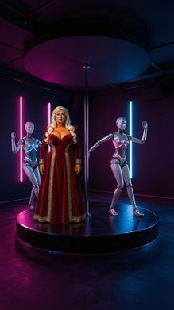 | 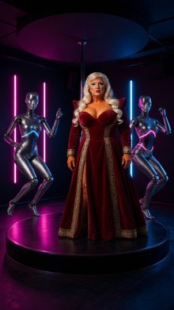 | xAI upsampler error 400: {"code":"invalid-argument","error":"Failed to start sampling: [input_too_large] The prompt is too long for this model's context window (8469 tokens > 8192 tokens)"} |
| 3237 | Front Wide Shot of the curvy woman in a red gown from <IMAGE_1> standing in the center of the vast steel flight deck of the aircraft carrier from <IMAGE_0>. The curvy woman in a red gown from <IMAGE_1> is positioned in the midground center, standing with her torso and head facing forward toward the camera. She maintains a confident facial expression and retains her exact appearance and wardrobe from <IMAGE_1>, including her long blonde hair, fair skin, and her lavish, floor-length red velvet presidential gown with gold brocade trim, structured shoulder pads, and massive padded prosthetic breasts. She appears exactly once in the frame. The vast grey steel flight deck of the aircraft carrier occupies the foreground and midground, with painted yellow lines running diagonally toward the horizon where the open ocean meets the sky under late afternoon light. The island superstructure is off-frame. The scene is bathed in harsh, direct golden hour sunlight from the west, casting long, dramatic shadows across the steel deck. The image style is a film still, shot on ARRI Alexa 65 with IMAX 70mm film quality, subject rendered with extreme crystal clarity, hyper-defined details, high-fidelity texture, ultra-sharp focus, visible skin pores, realistic fabric simulation, massive dynamic range, deep shadows, and cinematic color science. | HTTPSConnectionPool(host='api.x.ai', port=443): Read timed out. (read timeout=180) | 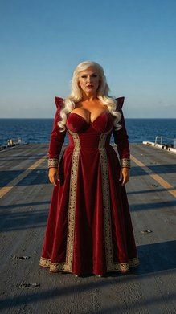 | 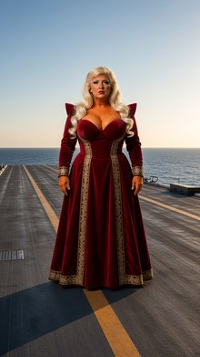 | HTTPSConnectionPool(host='api.x.ai', port=443): Read timed out. (read timeout=180) |
| 3236 | Front Medium Shot of the woman in the red gown from <IMAGE_1> standing centered behind the elevated wood-paneled speaker's rostrum from <IMAGE_0>. The woman in the red gown appears exactly once in the frame, standing centered, facing forward, and looking directly at the camera with a confident expression. Microphones are positioned on the podium in front of her. The background shows the towering textured green marble wall from <IMAGE_0>. She retains her exact appearance and wardrobe from <IMAGE_1>, including her long blonde hair, fair skin, and the lavish red velvet presidential gown with gold brocade trim, structured shoulder pads, and massive padded breasts integrated into the bodice. The camera is positioned at a front medium angle, focusing on her upper body and the podium. The scene is illuminated by bright, diffuse overhead arena lighting with a cool white temperature, casting an even glow across the stage area. This is a film still. Shot on ARRI Alexa 65 with IMAX 70mm film quality. Subject rendered with extreme crystal clarity, every detail hyper-defined and sharp. High-fidelity texture. Ultra-sharp focus on subject, high micro-detail rendering, skin pores visible, accurate skin texture, realistic fabric simulation. Massive dynamic range capture, deep shadows and bright highlights with a clean precise commercial color grade. | HTTPSConnectionPool(host='api.x.ai', port=443): Read timed out. (read timeout=180) | 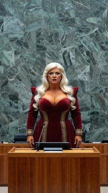 | 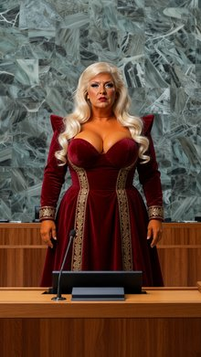 | HTTPSConnectionPool(host='api.x.ai', port=443): Read timed out. (read timeout=180) |
| 3235 | A Front Wide Shot film still of the blonde woman from <IMAGE_1> standing centered on the presidential seal carpet in the midground of the Oval Office from <IMAGE_0>. The blonde woman from <IMAGE_1> appears exactly once, positioned in the midground, standing facing forward with her torso and head directed at the camera, wearing a wide theatrical smile and looking forward. She retains her exact appearance and wardrobe from <IMAGE_1>, including her long blonde hair, fair skin, and her lavish, floor-length red velvet presidential gown with gold brocade trim, structured shoulder pads, and massive padded prosthetic breasts integrated into the bodice. Behind her in the background sits the Resolute Desk from <IMAGE_0> in front of three tall draped windows. The curved sofas of <IMAGE_0> are visible flanking the scene. Daytime. Bright, warm natural sunlight streams through the southern windows, casting soft shadows across the carpet. Shot on ARRI Alexa 65 with IMAX 70mm film quality. Subject rendered with extreme crystal clarity, every detail hyper-defined and sharp, with realistic fabric simulation and cinematic color science. | A front wide shot cinematic film still set in the Oval Office from <IMAGE_0>, featuring the blonde woman from <IMAGE_1> standing centered in the midground on the circular presidential seal carpet. She faces forward, looking directly at the camera with a wide, theatrical smile. She retains her exact appearance and wardrobe from <IMAGE_1>, including her voluminous blonde hair, dramatic makeup, and the lavish, floor-length red velvet gown with gold brocade trim, structured shoulder pads, and massive padded bodice. Behind her is the Resolute Desk and three tall windows from <IMAGE_0>, with the curved sofas flanking the scene. Bright, warm daytime sunlight streams through the windows, casting soft shadows across the carpet. Shot on ARRI Alexa 65 with IMAX 70mm film quality, featuring sharp focus, realistic fabric textures, and cinematic lighting. | 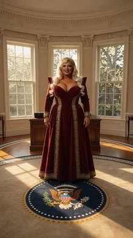 | 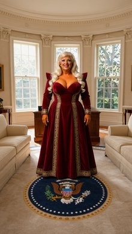 | 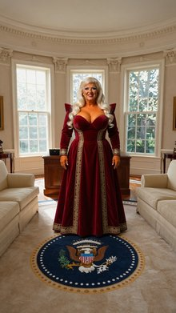 |
| 3234 | Right Medium Shot of the red-skinned demon from <IMAGE_1> standing by the metal table from <IMAGE_0> in profile, his face and body illuminated in an intense blue light. The bearded man in the black hoodie from <IMAGE_2> is partially visible frame-left, cut off by the edge of the frame. The red-skinned demon from <IMAGE_1> is positioned on the right side of the frame in profile, facing frame-left, and appears exactly once. He retains his exact appearance and wardrobe from <IMAGE_1>, including his red skin, horns, and his vibrant red Hawaiian shirt with yellow floral patterns over a grey t-shirt. The bearded man from <IMAGE_2> appears exactly once on the far frame-left, partially cut off, retaining his black podcasting hoodie, tactical vest, sunglasses, and the floating halo above his head. The rectangular metal table from <IMAGE_0> dominates the foreground, with its built-in perimeter cold-white light strip casting stark, upward shadows onto the characters. The background is dim, showing the raw concrete room and the faint blue and green indicator lights from the server cabinets on the far wall. Low-key dramatic interior lighting is present, with intense blue light highlighting the demon's profile. Film still, shot on ARRI Alexa 65 with IMAX 70mm film quality, extreme crystal clarity, hyper-defined details, high-fidelity texture, ultra-sharp focus, realistic skin and fabric texture, massive dynamic range, cinematic color science, clean commercial color grade. | A cinematic, right medium shot set within the dim, raw concrete server room from <IMAGE_0>. The rectangular metal table from <IMAGE_0> dominates the foreground, its built-in perimeter cold-white light strip casting stark, upward shadows onto the characters. On the right side of the frame, the red-skinned demon from <IMAGE_1> stands in profile, facing frame-left. He retains his exact appearance and wardrobe from <IMAGE_1>, including his muscular build, red skin, prominent horns, grinning expression, and his vibrant red Hawaiian shirt with yellow floral patterns worn open over a grey t-shirt and dark cargo pants. His face and body are dramatically illuminated by an intense blue light that highlights his profile. On the far frame-left, the bearded man from <IMAGE_2> is partially visible and cut off by the edge of the frame. He retains his exact look from <IMAGE_2>, wearing his black hoodie, tactical vest with pouches, dark sunglasses, dark cargo pants, and the glowing white halo floating above his head. The background remains a dim concrete environment, showing the faint blue and green indicator lights from the server cabinets on the far wall. The scene features low-key dramatic interior lighting, contrasting the intense blue light on the demon with the cold white table glow. The image is styled as a film still, shot on ARRI Alexa 65 with IMAX 70mm film quality, featuring extreme crystal clarity, hyper-defined details, high-fidelity texture, ultra-sharp focus, realistic skin and fabric textures, massive dynamic range, cinematic color science, and a clean commercial color grade. | 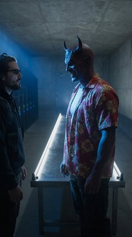 | 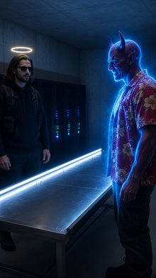 | 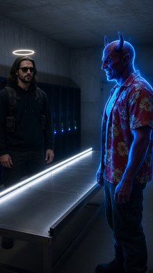 |
| 3233 | A Back Wide Shot film still from a rear perspective showing a tall bearded man and a red-skinned demon standing side-by-side inside the concrete room from <IMAGE_0>, facing a brilliant, swirling blue energy portal that has opened in the center of the far background concrete wall. On the left, the tall bearded man from <IMAGE_1> stands with his back entirely to the camera, his body outlined in a bright blue silhouette from the portal's light, with his gold halo from <IMAGE_1> glowing softly above his head. On the right, the red-skinned demon from <IMAGE_2> stands with his back to the camera, his muscular, horned form similarly silhouetted in a bright blue glow. Both characters are positioned in the midground, looking directly forward at the swirling blue portal in the background. The concrete room is dimly lit with low-key dramatic interior lighting, showing the server cabinets with faint blue and green indicator lights along the left wall. A bright, cold-white light strip is built into the perimeter of the metal table in <IMAGE_0>, casting stark, upward shadows on their figures. Captured in cinematic-modern style, shot on ARRI Alexa 65, IMAX 70mm film quality, extreme crystal clarity, hyper-defined details, and a precise commercial color grade. | A cinematic back wide shot film still set inside the dimly lit concrete room from <IMAGE_0>. The perspective is from behind, looking down the length of the room. In the foreground, the long metal table from <IMAGE_0> stretches forward, its built-in bright, cold-white perimeter light strip casting stark, upward shadows onto the figures ahead. In the midground, two characters stand side-by-side with their backs entirely to the camera, facing the far wall. On the left is the tall, bearded man from <IMAGE_1>, wearing his black hoodie, backpack straps, and dark cargo pants; his signature glowing gold halo floats softly above his head. On the right is the muscular, red-skinned demon from <IMAGE_2>, wearing his red Hawaiian shirt over a grey t-shirt, dark cargo pants, and boots, with his large horns clearly visible from the rear. Both figures are looking directly forward at a brilliant, swirling blue energy portal that has violently opened in the center of the far concrete wall, replacing the metal double doors. The intense, luminous blue light from the portal heavily backlights the characters, outlining their silhouettes in a bright blue rim light. The room retains its low-key, dramatic interior lighting, with the row of black server cabinets on the left wall displaying faint blue and green indicator lights. The image features a cinematic-modern style, shot on ARRI Alexa 65 with IMAX 70mm film quality, extreme crystal clarity, hyper-defined details, and a precise commercial color grade. | 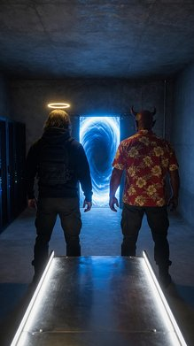 | 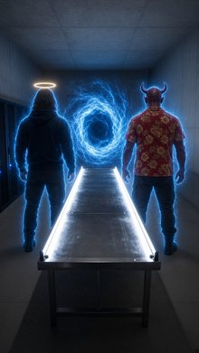 | 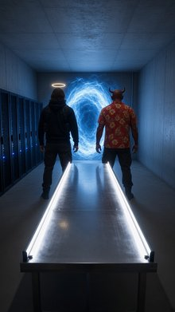 |
| 3232 | Left Medium Shot of a tall bearded man and a red demon in the server room from <IMAGE_0>. The tall bearded man from <IMAGE_1> is standing screen-left, torso facing slightly frame-right but head turned forward, looking ahead. He retains his exact appearance from <IMAGE_1>, including his beard, his black modern podcasting hoodie, his tactical vest, and matte black tactical sunglasses. A glowing gold halo hovers exactly five inches above his head, casting a warm light. The red demon from <IMAGE_2> stands slightly behind him, positioned screen-right, with his hand resting on the tall bearded man's shoulder. The red demon retains his exact appearance from <IMAGE_2>, with red-skinned demonic features, horns, and a vibrant red Hawaiian short-sleeve shirt with yellow floral patterns. Both characters appear exactly once in the frame. The background shows the dim concrete server room from <IMAGE_0> with the rack of server cabinets and faint blue and green indicator lights. Low-key dramatic interior lighting, with a bright, cold-white light strip built into the perimeter of the metal table casting stark, upward shadows onto the characters. Cinematic modern film still, shot on ARRI Alexa 65 with IMAX 70mm film quality, extreme clarity, hyper-defined textures, high dynamic range, and clean precise commercial color grade. | A cinematic medium shot set in the dimly lit concrete server room from <IMAGE_0>. The composition features two characters standing behind the long, illuminated metal table. On the left side of the frame stands the tall, bearded man from <IMAGE_1>, retaining his exact appearance, including his long dark hair, beard, matte black tactical sunglasses, black hoodie, and the black tactical chest rig with pouches. His torso is angled slightly toward the right of the frame, but his head is turned forward, looking directly ahead. A glowing gold halo hovers exactly five inches above his head, casting a warm light on his hair. Standing slightly behind him and to the right is the red-skinned demon from <IMAGE_2>, retaining his muscular build, demonic facial features, prominent horns, and the vibrant red Hawaiian short-sleeve shirt with yellow floral patterns worn over a grey t-shirt. The demon has one hand resting on the tall bearded man's shoulder. The background features the dark server cabinets with faint blue and green indicator lights and the grey double doors from <IMAGE_0>. The scene is illuminated by low-key dramatic interior lighting, with the bright, cold-white light strip built into the perimeter of the metal table in the foreground casting stark, upward shadows onto the characters' torsos and faces. The image has the aesthetic of a modern film still shot on an ARRI Alexa 65 with IMAX 70mm film quality, featuring extreme clarity, hyper-defined textures, high dynamic range, and a clean, precise commercial color grade. | 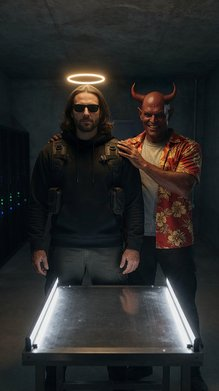 | 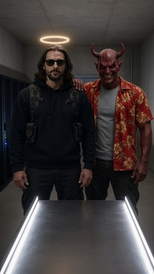 | 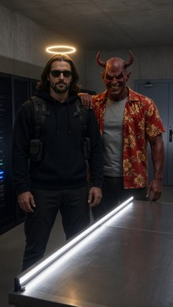 |
| 3231 | A cinematic-modern film still, Front Close Up of the bearded man from <IMAGE_1> standing by the rectangular metal table from <IMAGE_0>, his hands holding the buckles of the black ballistic nylon chest harness on his chest. The bearded man from <IMAGE_1> appears exactly once in the frame, positioned in a close-up composition, facing forward towards the camera with a neutral expression, his torso and head oriented directly at the lens. He retains his exact appearance and wardrobe from <IMAGE_1>, including his brown hair, beard, casual black hoodie, and tactical vest, but is now wearing the high-tech utility harness with quick-release steel buckles and a central carbon fiber plate across his chest. He holds the buckles of the harness with both hands. A glowing circular ring of solid gold light, the halo, floats exactly five inches above his head, casting a soft, warm glow downward. Only his upper chest, shoulders, head, and hands are visible in the frame. The background is dim, showing a portion of the raw concrete room and the rack of server cabinets with faint blue and green indicator lights from <IMAGE_0>. Low-key dramatic interior lighting is used, with a bright, cold-white light strip built into the perimeter of the metal table casting stark, upward shadows onto the bearded man. Captured in the style of an ARRI Alexa 65 cinematic film still, with extreme crystal clarity, ultra-sharp focus, visible skin texture, and deep dynamic range with high contrast shadows. | A cinematic-modern film still featuring a front close-up shot of the bearded man from <IMAGE_1> standing directly behind the rectangular metal table from <IMAGE_0>. The composition tightly frames only his upper chest, shoulders, head, and hands, with his torso and head oriented directly at the lens and a neutral expression on his face. He retains his exact appearance and wardrobe from <IMAGE_1>, including his long brown hair, beard, dark sunglasses, and casual black hoodie, but his backpack straps are now upgraded to a high-tech black ballistic nylon utility chest harness featuring a central carbon fiber plate and quick-release steel buckles. Both of his hands are actively holding the steel buckles of this harness. A glowing circular ring of solid gold light, acting as a halo, floats exactly five inches above his head, casting a soft, warm downward glow on his hair. The background is dimly lit, showing a portion of the raw concrete room from <IMAGE_0>, specifically the rack of black server cabinets with faint blue and green indicator lights. In the immediate foreground, the bright, cold-white light strip built into the perimeter of the metal table from <IMAGE_0> casts stark, dramatic upward shadows onto the man's torso and face. The scene features low-key dramatic interior lighting with deep dynamic range and high contrast shadows. The image is captured in the style of an ARRI Alexa 65 cinematic film still, boasting extreme crystal clarity, ultra-sharp focus, visible skin texture, and a highly detailed, photorealistic finish. | 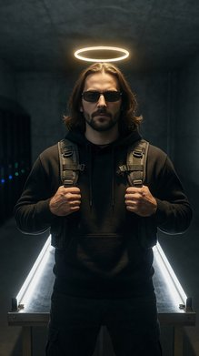 | 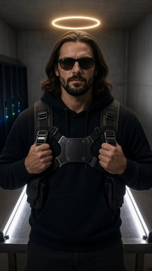 | 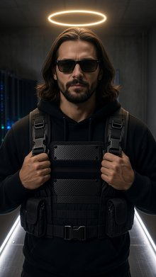 |
| 3230 | Front Close Up on the bearded man from <IMAGE_1>'s midsection as he stands by the metal table from <IMAGE_0>, holding the tactical belt device near his tactical belt. He appears exactly once in the frame, with only his midsection, hands, and tactical belt visible; his face is out of frame. He holds the dark grey steel cylinder of the tactical belt device with one hand, positioning it near his waist. The soft, warm light from his floating gold halo, though the halo itself is out of frame, casts a gentle golden rim light onto his shoulders and upper chest. The metallic edge of the rectangular table is visible in the foreground, with its built-in bright, cold-white light strip casting stark, upward-angled light and shadows onto his torso. The background is dim and out of focus, showing the faint blue and green indicator lights of the server cabinets from <IMAGE_0>. Low-key dramatic interior lighting creates a stark contrast between the cold upward light and the warm shoulder rim light. Cinematic-modern style film still. Shot on ARRI Alexa 65 with IMAX 70mm film quality. Subject rendered with extreme crystal clarity, every detail hyper-defined and sharp, with high-fidelity texture, ultra-sharp focus, and realistic fabric simulation. | A cinematic, ultra-detailed front close-up shot focusing exclusively on the midsection, hands, and waist area of the man from <IMAGE_1>, standing beside the metal table from <IMAGE_0>. His face and head are completely out of frame. He is wearing the same black hoodie with a front pocket, dark cargo pants with side pockets, and the black tactical backpack straps with attached pouches seen in <IMAGE_1>. Around his waist is a rugged tactical belt. One of his hands is visible, holding a dark grey steel cylindrical tactical belt device, positioning it closely near his waist. In the immediate foreground, the metallic edge of the rectangular table from <IMAGE_0> is prominently visible, featuring its built-in bright, cold-white light strip. This light strip casts stark, upward-angled cold white illumination and dramatic shadows onto the man's lower torso and hands. Although the halo itself is out of frame, the soft, warm golden light emanating from it casts a gentle golden rim light onto his upper chest and shoulders. The background is a dim, out-of-focus concrete room, featuring the blurred, glowing blue and green indicator lights of the black server cabinets from <IMAGE_0>. The scene features low-key, dramatic interior lighting with a stark contrast between the cold upward table light and the warm shoulder rim light. The image is rendered as a cinematic-modern style film still, shot on ARRI Alexa 65 with IMAX 70mm film quality, featuring extreme crystal clarity, hyper-defined sharp focus on the subject, high-fidelity textures, and realistic fabric simulation. | 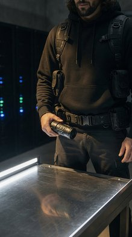 | 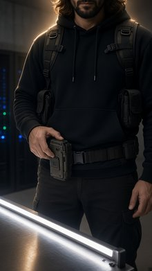 | 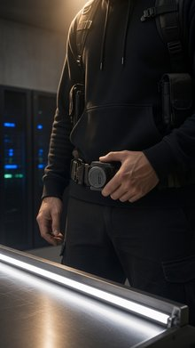 |
| 3229 | A cinematic-modern film still, Front Close Up shot on ARRI Alexa 65 with IMAX 70mm film quality. The bearded man from <IMAGE_1> is positioned centrally in a front close up shot, with his face filling the majority of the frame. He appears exactly once. He wears the matte black tactical sunglasses with thick frames from <IMAGE_1> over his eyes, and the circular ring of golden light of his floating halo from <IMAGE_1> is visible hovering just above his dark hair, casting a warm golden light over his head. In the lower part of the frame, his hands are visible holding the heavy, brushed titanium chronometer case. His torso and face are oriented directly toward the camera, maintaining a neutral expression behind his sunglasses. The background behind him shows the dim, shadowy interior of the underground room from <IMAGE_0>, with the bright, cold-white light strip built into the perimeter of the metal table casting stark, upward shadows onto his features. Faint, out-of-focus blue and green indicator lights from the server cabinets glow softly in the dark background. Cinematic color science with deep shadows and bright highlights, clean precise commercial color grade, extreme crystal clarity with every detail hyper-defined and sharp. | A cinematic-modern film still featuring a front close-up shot of the bearded man from <IMAGE_1>, positioned centrally with his face filling the majority of the frame. He retains his long dark hair, beard, and the matte black tactical sunglasses with thick frames from <IMAGE_1>, maintaining a neutral expression. The circular ring of golden light of his floating halo from <IMAGE_1> hovers just above his dark hair, casting a warm golden light over his head. He is wearing the same black hoodie and backpack straps from <IMAGE_1>. In the lower part of the frame, his hands are visible holding a heavy, brushed titanium chronometer case. His torso and face are oriented directly toward the camera. The background behind him shows the dim, shadowy interior of the underground concrete room from <IMAGE_0>. The bright, cold-white light strip built into the perimeter of the metal table from <IMAGE_0> is positioned just in front of him, casting stark, dramatic upward shadows onto his features. Faint, out-of-focus blue and green indicator lights from the server cabinets from <IMAGE_0> glow softly in the dark background. The image is shot on an ARRI Alexa 65 with IMAX 70mm film quality, featuring cinematic color science with deep shadows, bright highlights, a clean precise commercial color grade, and extreme crystal clarity with every detail hyper-defined and sharp. | 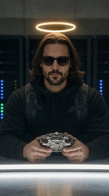 | 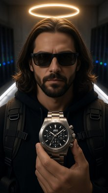 | 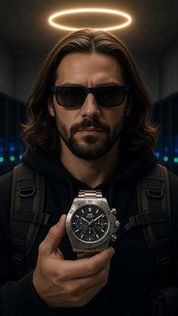 |
| 3228 | Front Medium Shot of the bearded man and the red-skinned demon standing around the central metal table from <IMAGE_0>. The bearded man from <IMAGE_1> stands frame-left of the metal prep table, facing the camera with his body turned slightly inwards. He retains his exact appearance and wardrobe from <IMAGE_1>, including his black podcasting hoodie under a tactical vest, and wears the matte black tactical sunglasses with thick frames <IMAGE_1>, while his golden halo floats with a warm golden glow above his head. The red-skinned demon from <IMAGE_2> stands frame-right, facing left towards the bearded man. He retains his exact appearance from <IMAGE_2>, wearing his unbuttoned vibrant red Hawaiian shirt with yellow floral patterns over a grey cotton t-shirt. The cold white light strip built into the perimeter of the metal table illuminates both of their faces with a stark, upward cast. The background is dim, showing the faint blue and green indicator lights from the server cabinets on the wall of <IMAGE_0>. Low-key dramatic interior lighting with stark, upward shadows. Film still. Shot on ARRI Alexa 65 with IMAX 70mm film quality. Subject rendered with extreme crystal clarity, every detail hyper-defined and sharp. High-fidelity texture. Ultra-sharp focus on subject, high micro-detail rendering, accurate skin texture, realistic fabric simulation, massive dynamic range capture. | A front medium shot set in the dimly lit, concrete-walled bunker room from <IMAGE_0>, featuring the long stainless steel prep table with its bright, glowing white perimeter light strips positioned centrally. Standing frame-left of the table is the bearded man from <IMAGE_1>, retaining his exact appearance and wardrobe: a black hoodie under a tactical vest with pouches, black cargo pants, black boots, and matte black tactical sunglasses with thick frames. His long brown hair falls to his shoulders, and his glowing golden halo floats above his head. His body is turned slightly inwards toward the table while he faces the camera. Standing frame-right is the muscular, red-skinned demon from <IMAGE_2>, facing left towards the bearded man. The demon retains his exact look, including the red horns, menacing grin, glowing red eyes, unbuttoned vibrant red Hawaiian shirt with yellow floral patterns, grey cotton t-shirt, dark cargo pants, and black boots. The cold white light from the table's edge casts a stark, dramatic upward illumination on both of their faces and torsos, creating deep, upward shadows. The background is dim and atmospheric, showing the heavy double doors and the row of dark server cabinets with faint blue and green indicator lights from <IMAGE_0>. The image is styled as a cinematic film still shot on an ARRI Alexa 65 with IMAX 70mm film quality, featuring low-key dramatic interior lighting, massive dynamic range capture, and extreme crystal clarity with hyper-defined, ultra-sharp focus on the subjects, accurate skin textures, and realistic fabric simulation. | 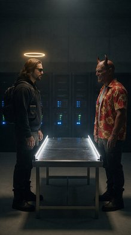 | 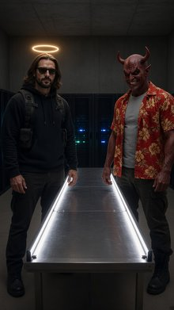 | 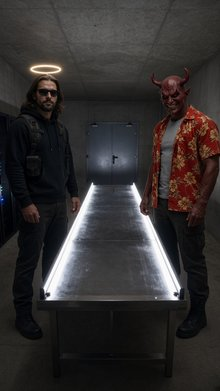 |
| 3227 | Left Medium Shot of the wizard in pink from <IMAGE_1>, the dark-haired woman from <IMAGE_2>, and the tall man from <IMAGE_3> in the dense, mist-shrouded forest from <IMAGE_0>. The wizard in pink from <IMAGE_1> is leaning with his frame-right shoulder against a large tree trunk centered in the midground, facing frame-left. He holds the wizard staff prop loosely in his hand. He appears exactly once in the frame, wearing his exact bright pink satin ballgown dress with layered tulle ruffles and puffed sleeves from <IMAGE_1>. The dark-haired woman from <IMAGE_2> and the tall man from <IMAGE_3> stand in the midground frame-right, watching him with curious expressions. Both characters appear exactly once in the frame, retaining their exact wardrobes from <IMAGE_2> and <IMAGE_3> respectively. The winding dirt path and gnarled, mossy trees from <IMAGE_0> are visible, with dense ferns and undergrowth framing the scene. Late afternoon. Diffuse, cool blue light filters down through the dense forest canopy. Soft, volumetric mist rolls across the ground, catching faint golden rays from a low sun. Cinematic-modern style film still, shot on ARRI Alexa 65 with IMAX 70mm film quality. Extreme crystal clarity, hyper-defined sharp details, realistic fabric simulation, and cinematic color science. | xAI upsampler error 400: {"code":"invalid-argument","error":"Failed to start sampling: [input_too_large] The prompt is too long for this model's context window (8405 tokens > 8192 tokens)"} | 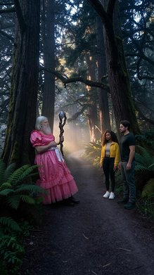 | 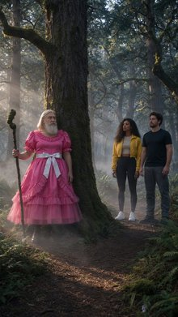 | xAI upsampler error 400: {"code":"invalid-argument","error":"Failed to start sampling: [input_too_large] The prompt is too long for this model's context window (8405 tokens > 8192 tokens)"} |
| 3226 | Front Medium Shot. On the winding dirt path from <IMAGE_0>, the elderly, bearded, long-haired man from <IMAGE_1> stands centered in the midground, holding the five-foot-tall wooden wizard staff from the prop description vertically in his right hand. A cloud of pink glittery smoke is dispersing around him, revealing him wearing a frilly, vibrant bright pink satin ballgown dress featuring layered tulle ruffles on the skirt, puffed short sleeves, and a shiny white ribbon bow at the waist, retaining his exact physical appearance from <IMAGE_1>. Partially visible on screen-right, the dark-haired, curly-haired young woman from <IMAGE_2> and the tall, brown-haired, bearded man from <IMAGE_3> stand side-by-side staring in disbelief, retaining their exact physical appearance and wardrobe from <IMAGE_2> and <IMAGE_3> respectively. The ancient gnarled trees and mist from <IMAGE_0> surround them. Late afternoon lighting with diffuse, cool blue light filtering down through the dense forest canopy, with soft, volumetric mist rolling across the ground catching faint golden rays. Cinematic-modern film still, shot on ARRI Alexa 65 with IMAX 70mm film quality, extreme crystal clarity, hyper-defined details, and realistic fabric simulation. | xAI upsampler error 400: {"code":"invalid-argument","error":"Failed to start sampling: [input_too_large] The prompt is too long for this model's context window (8376 tokens > 8192 tokens)"} | 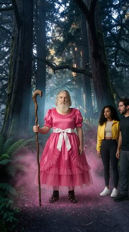 | 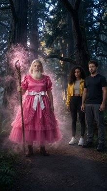 | xAI upsampler error 400: {"code":"invalid-argument","error":"Failed to start sampling: [input_too_large] The prompt is too long for this model's context window (8376 tokens > 8192 tokens)"} |
| 3225 | A Front Medium Shot of the green muscular broccoli turtle from <IMAGE_1> and the red female tomato woman from <IMAGE_2> standing by the pool from <IMAGE_0>. The green muscular broccoli turtle from <IMAGE_1> is positioned frame-left in the midground, standing tall on his green legs, torso and head facing frame-right. He retains his exact appearance and wardrobe from <IMAGE_1>, including his green muscular broccoli-headed design, neon green board shorts, and silver chain necklace. The red female tomato woman from <IMAGE_2> is positioned frame-right in the midground, standing facing frame-left toward him with her hands on her hips, her expression confident and defiant. She retains her exact appearance and wardrobe from <IMAGE_2>, including her red skin, glittering metallic gold two-piece bikini, and oversized designer sunglasses on her head. The turquoise pool from <IMAGE_0> is visible in the background, reflecting the bright midday sun. The scene is illuminated by bright, intense midday sunlight with a warm golden hue casting sharp, distinct shadows on the characters and deck. Film still. Shot on ARRI Alexa 65 with IMAX 70mm film quality. Subject rendered with extreme crystal clarity, every detail hyper-defined and sharp. High-fidelity texture. Ultra-sharp focus on subject, high micro-detail rendering, realistic fabric simulation. Massive dynamic range capture, deep shadows and bright highlights. Cinematic color science. Clean precise commercial color grade. | A cinematic front medium shot set in the tropical resort environment from <IMAGE_0>, featuring the wooden lounge chairs in the immediate foreground, the circular wooden bar, and the lush palm trees in the background. In the midground, standing on the stone deck by the bright turquoise pool, are two characters. On the frame-left stands the green muscular broccoli-headed turtle character from <IMAGE_1>, retaining his exact appearance, including the textured broccoli head, dark sunglasses, silver chain necklace, and neon green board shorts. He is standing tall on his green legs, with his torso and head facing towards the frame-right. On the frame-right stands the red female tomato-headed character from <IMAGE_2>, retaining her exact appearance, including her red skin, glittering metallic gold two-piece bikini, and the oversized designer sunglasses resting on top of her tomato head. She is standing facing frame-left toward the turtle character, with her hands on her hips and a confident, defiant expression. The scene is illuminated by bright, intense midday sunlight with a warm golden hue, casting sharp, distinct shadows from the characters onto the stone deck. The turquoise pool water in the background reflects the bright sun. The image is rendered as a film still shot on an ARRI Alexa 65 with IMAX 70mm film quality, featuring extreme crystal clarity, hyper-defined textures, realistic fabric simulation, deep shadows, bright highlights, and a clean, precise commercial color grade. | 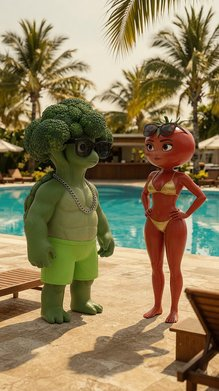 | 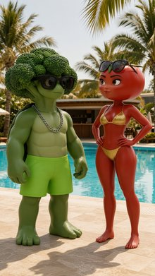 | 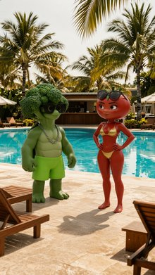 |
| 3224 | Two Shot of the broccoli-headed turtle from <IMAGE_1> and the tomato woman from <IMAGE_2> seated on soft white cushions inside the cabana from <IMAGE_0>. The broccoli-headed turtle is positioned frame-left, his body angled toward her, sitting exactly once in the frame. The tomato woman is positioned frame-right, smiling at him, sitting exactly once in the frame. The white cabana curtains from <IMAGE_0> billow softly behind them. The shot focuses on the interior of the luxury cabana, showing the wooden deck floor and white cushions, while the poolside bar and outer pool deck are excluded. Soft, warm late-afternoon golden-hour sunlight filters through the green palm leaves, casting gentle light on their bodies. Change the image style to a film still. Shot on ARRI Alexa 65 with IMAX 70mm film quality. Subject rendered with extreme crystal clarity, every detail hyper-defined and sharp. High-fidelity texture. Ultra-sharp focus on subject, high micro-detail rendering. Freckles/skin pores visible, accurate skin texture, realistic fabric simulation. Massive dynamic range capture, deep shadows and bright highlights. Cinematic color science. Clean precise commercial color grade. | A cinematic two-shot film still set strictly inside the luxury cabana from <IMAGE_0>, focusing entirely on the interior space with the wooden deck floor and soft white cushions, completely excluding the poolside bar and outer pool deck. Seated on the left side of the white cushions is the broccoli-headed turtle character from <IMAGE_1>, positioned frame-left with his muscular green body angled toward the right. He retains his textured broccoli head, black sunglasses, silver chain necklace, and bright green shorts. Seated on the right side of the cushions is the tomato-headed woman from <IMAGE_2>, positioned frame-right and smiling warmly at the turtle. She retains her red tomato head with the green stem, sunglasses resting on top, and sparkly gold bikini. The white cabana curtains from <IMAGE_0> are billowing softly behind them. Soft, warm late-afternoon golden-hour sunlight filters through the green palm leaves, casting gentle light, deep shadows, and bright highlights on their bodies. The image is rendered as a film still shot on an ARRI Alexa 65 with IMAX 70mm film quality, featuring extreme crystal clarity, high-fidelity textures, ultra-sharp focus, and massive dynamic range. The characters exhibit hyper-defined micro-details, including visible skin pores, subtle freckles, accurate skin textures, and realistic fabric simulation, all finished with a clean, precise commercial color grade and cinematic color science. | 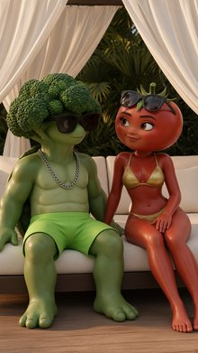 | ||
| 3223 | Front Wide Shot of the pool deck at twilight from <IMAGE_0>. The green broccoli-headed turtle from <IMAGE_1> is standing frame-left, and the red tomato woman from <IMAGE_2> is standing frame-right, facing each other on the pool deck. The green broccoli-headed turtle from <IMAGE_1> appears exactly once, standing in neon green board shorts with a silver chain necklace, looking toward frame-right. The red tomato woman from <IMAGE_2> appears exactly once, standing in a glittering metallic gold two-piece bikini with sunglasses on her head, looking toward frame-left. The background features the pool deck from <IMAGE_0> with warm overhead string lights and a glowing blue pool in the foreground. Soft twilight evening lighting, with warm, glowing artificial string lights hanging overhead and blue underwater pool spotlights illuminating the water. Cinematic film still style, shot on ARRI Alexa 65 with IMAX 70mm film quality, subject rendered with extreme crystal clarity, high-fidelity texture, massive dynamic range capture, clean precise commercial color grade. | A cinematic front wide shot of the luxurious pool deck at twilight, integrating the characters from <IMAGE_1> and <IMAGE_2> into the environment of <IMAGE_0>. On the left side of the stone-tiled deck, the green, muscular broccoli-headed turtle character from <IMAGE_1> stands facing right. He retains his textured broccoli head, dark sunglasses, silver chain necklace, and neon green board shorts. On the right side of the deck, the red tomato-headed woman from <IMAGE_2> stands facing left, looking toward the turtle. She retains her tomato head with a green stem, the dark sunglasses resting on top, and her glittering metallic gold two-piece bikini. They are positioned as if facing each other. The background features the exact twilight setting of <IMAGE_0>, including the glowing blue swimming pool in the foreground, the wooden bar with warm overhead string lights, the lounge chairs, and the palm trees against the dusk sky. The lighting is soft twilight evening illumination, combining the warm, glowing artificial string lights from the bar with the blue underwater pool spotlights reflecting on the water and deck. The image is rendered in a cinematic film still style, shot on ARRI Alexa 65 with IMAX 70mm film quality, featuring extreme crystal clarity, high-fidelity texture, massive dynamic range capture, and a clean, precise commercial color grade. | 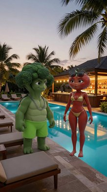 | 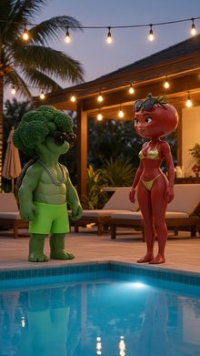 | 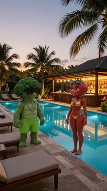 |
| 3222 | A Front Wide Shot of the pool deck from <IMAGE_0> in a cinematic-modern style. A green muscular broccoli-headed turtle from <IMAGE_1>, wearing neon green board shorts and a silver chain necklace, is kneeling frame-left near the glowing edge of the pool. A red female anthropomorphic tomato from <IMAGE_2>, wearing a tiny glittering metallic gold two-piece bikini set with oversized designer sunglasses on top of her head, stands frame-right looking down towards him. The dark wooden bar counter runs along the frame-right background with shelves of colorful bottles visible. The scene is illuminated by the soft twilight of evening, with warm, glowing artificial string lights hanging overhead, and blue underwater pool spotlights lighting up the water. Shot on ARRI Alexa 65 with IMAX 70mm film quality, extreme crystal clarity, high-fidelity texture, massive dynamic range, and clean precise commercial color grade. | A cinematic, front wide shot of the luxurious tropical pool deck from <IMAGE_0>, now featuring two stylized 3D characters integrated into the scene. On the frame-left, kneeling on the stone-tiled patio near the glowing edge of the pool, is the muscular green turtle with a broccoli head from <IMAGE_1>. He retains his black sunglasses, thick silver chain necklace, and neon green board shorts. Standing on the frame-right is the red anthropomorphic tomato character from <IMAGE_2>, wearing her tiny glittering metallic gold two-piece bikini set, with oversized designer sunglasses resting on top of her tomato head. She is looking down towards the kneeling turtle. The background perfectly preserves the environment of <IMAGE_0>, including the dark wooden bar counter on the right with its shelves of colorful bottles, the warm, glowing artificial string lights hanging overhead, the lounge chairs on the left, and the tall palm trees against the soft twilight evening sky. The bright blue underwater pool spotlights illuminate the water. The entire scene is rendered with extreme crystal clarity, high-fidelity textures, massive dynamic range, and a clean, precise commercial color grade, emulating the look of being shot on an ARRI Alexa 65 with IMAX 70mm film quality. | 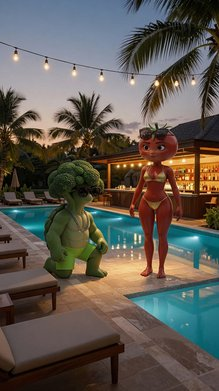 | 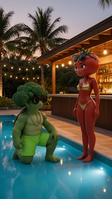 | 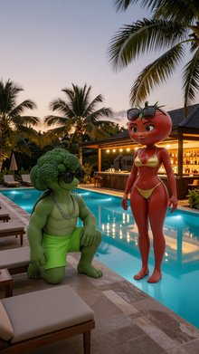 |
| 3221 | Front Wide Shot. A tense confrontation occurs by the pool deck from <IMAGE_0> in a three-shot composition. The green broccoli-headed turtle from <IMAGE_1> stands screen-left on the poolside walkway, glaring frame-right with an angry expression, his torso turned slightly toward the center. The red female tomato from <IMAGE_2> stands centered on the walkway, looking anxious and tense, facing forward toward the camera. The stout purple eggplant from <IMAGE_3> is positioned screen-right, taking a physical step forward toward the other two characters, his body oriented frame-left. The green broccoli-headed turtle retains his exact appearance from <IMAGE_1>, including his green muscular body, broccoli-cluster head, neon green board shorts, and silver chain necklace. The red female tomato retains her exact appearance from <IMAGE_2>, including her red skin, leafy hair, and glittering metallic gold two-piece bikini. The stout purple eggplant retains his exact appearance from <IMAGE_3>, including his dark purple body, green stem cap, silk black unbuttoned short-sleeve resort shirt, and gold watch. The scene takes place beside the glowing blue pool edge in the foreground, with the dark wooden poolside bar and colorful bottle shelves visible in the background as established in <IMAGE_0>. Soft, twilight evening light fills the scene, with warm, glowing artificial string lights hanging overhead and blue underwater pool spotlights illuminating the water. Cinematic-modern style: a film still shot on ARRI Alexa 65 with IMAX 70mm film quality, subject rendered with extreme crystal clarity, high-fidelity texture, ultra-sharp focus, cinematic color science with a clean precise commercial color grade. | xAI upsampler error 400: {"code":"invalid-argument","error":"Failed to start sampling: [input_too_large] The prompt is too long for this model's context window (8455 tokens > 8192 tokens)"} | 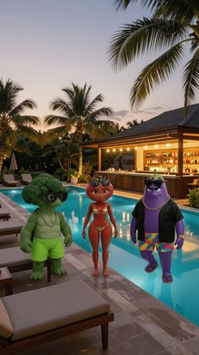 | 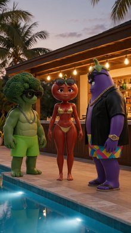 | xAI upsampler error 400: {"code":"invalid-argument","error":"Failed to start sampling: [input_too_large] The prompt is too long for this model's context window (8455 tokens > 8192 tokens)"} |
| 3220 | Front Close Up on the tomato woman from <IMAGE_1>. The tomato woman from <IMAGE_1> is centered in the foreground, facing screen-left. She has a wide, manic, unhinged New York grin on her face. Her hands are down out of frame. She appears exactly once in the frame and retains her exact appearance of a red female anthropomorphic tomato and her wardrobe from <IMAGE_1>, including her tiny, glittering metallic gold two-piece bikini set and oversized designer sunglasses positioned on top of her head. In the background, the poolside bar from <IMAGE_0> is softly blurred, showing shelves lined with colorful bottles and glowing warm artificial string lights overhead, while a hint of blue light from the pool illuminates the scene. Soft, twilight evening lighting falls across her face with warm, glowing artificial string lights overhead and blue pool reflections. This is a cinematic-modern film still. Shot on ARRI Alexa 65 with IMAX 70mm film quality. Subject rendered with extreme crystal clarity, every detail hyper-defined and sharp. High-fidelity texture. Ultra-sharp focus on subject, high micro-detail rendering. Accurate skin texture, realistic fabric simulation. Massive dynamic range capture, deep shadows and bright highlights. Cinematic color science. Clean precise commercial color grade. | A cinematic-modern film still featuring a front close-up of the anthropomorphic tomato woman from <IMAGE_1>. She is centered in the foreground, with her body and face turned to face screen-left, and her hands positioned down out of frame. She retains her exact appearance and wardrobe from <IMAGE_1>, including her red tomato body, the green stem on top of her head, the oversized dark sunglasses resting on her head, and the tiny, glittering metallic gold two-piece bikini. Her facial expression has been changed to a wide, manic, unhinged New York grin, prominently displaying her teeth. The background is a softly blurred, shallow depth-of-field version of the luxurious poolside bar scene from <IMAGE_0>. The out-of-focus background features the wooden bar structure with shelves lined with colorful liquor bottles, glowing warm artificial string lights hanging overhead, and a hint of the bright blue illuminated swimming pool. Soft, twilight evening lighting falls across her face, blending the warm, glowing artificial string lights with cool blue pool reflections. The image is styled as if shot on an ARRI Alexa 65 with IMAX 70mm film quality, featuring extreme crystal clarity and ultra-sharp focus on the subject. It showcases high-fidelity textures, realistic fabric simulation on the glittering gold bikini, and accurate tomato skin texture. The composition boasts a massive dynamic range with deep shadows, bright highlights, cinematic color science, and a clean, precise commercial color grade. | 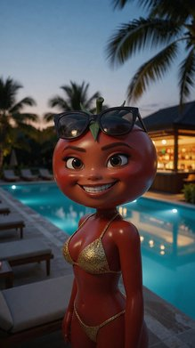 | 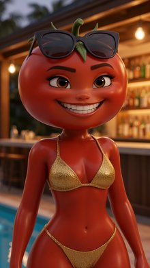 | |
| 3219 | Front Wide Shot of the messy aftermath on the poolside deck from <IMAGE_0>. The green broccoli-headed turtle from <IMAGE_1> is standing on screen-left, looking miserable and completely covered head-to-toe in red tomato juice, retaining his exact appearance, cgi broccoli-turtle body, and neon green board shorts from <IMAGE_1> in a full-body view. The red female tomato woman from <IMAGE_2> stands proud and centered, looking towards the camera with a smug facial expression, retaining her exact red tomato body, glittering metallic gold two-piece bikini, and oversized designer sunglasses on her head from <IMAGE_2>. The purple eggplant man from <IMAGE_3> stands on screen-right, pointing his finger mockingly at the broccoli turtle, retaining his stout purple eggplant body and silk black unbuttoned short-sleeve resort shirt from <IMAGE_3>. The scene is set on the luxurious outdoor resort pool deck from <IMAGE_0>, featuring the glowing blue pool edge in the foreground, with the dark wooden bar counter and shelves of colorful bottles visible in the background. The lighting is a soft, twilight evening with warm, glowing artificial string lights hanging overhead and blue underwater pool spotlights illuminating the water. Cinematic-modern style, film still, shot on ARRI Alexa 65 with IMAX 70mm film quality, subject rendered with extreme crystal clarity, every detail hyper-defined and sharp, high-fidelity texture, massive dynamic range capture, cinematic color science, clean precise commercial color grade. | xAI upsampler error 400: {"code":"invalid-argument","error":"Failed to start sampling: [input_too_large] The prompt is too long for this model's context window (8423 tokens > 8192 tokens)"} | 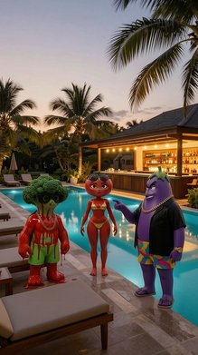 | 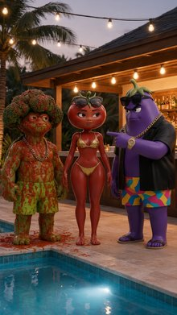 | xAI upsampler error 400: {"code":"invalid-argument","error":"Failed to start sampling: [input_too_large] The prompt is too long for this model's context window (8423 tokens > 8192 tokens)"} |
| 3218 | A Left Medium Shot of the green broccoli turtle from <IMAGE_1> and the red tomato woman from <IMAGE_2> at the poolside bar from <IMAGE_0>. The green broccoli turtle from <IMAGE_1> appears exactly once, positioned on screen-left in the foreground, facing screen-right. His face is twisted in a furious scowl, and he clutches a small, square, black velvet-lined ring box with a massive, sparkling five-carat round-cut diamond ring on a platinum band visible inside it. The red tomato woman from <IMAGE_2> appears exactly once, visible in the background on screen-right, looking startled. She retains her exact appearance and wardrobe from <IMAGE_2>, wearing a glittering metallic gold bikini set. The green broccoli turtle retains his exact appearance and wardrobe from <IMAGE_1>, wearing neon green board shorts and a silver chain. The scene is shot from Camera Zone 1 of <IMAGE_0>, showcasing the dark wooden pool bar and shelves of colorful bottles. The lighting is a soft, twilight evening with warm overhead string lights and blue underwater pool spotlights. This cinematic-modern image is a film still, shot on ARRI Alexa 65 with IMAX 70mm film quality, capturing massive dynamic range with deep shadows and bright highlights, featuring clean commercial color grading. | A cinematic left medium shot set in the luxurious twilight poolside environment from <IMAGE_0>. In the left foreground, the muscular green broccoli-headed turtle character from <IMAGE_1> is positioned facing screen-right. He retains his exact appearance and wardrobe, including the textured broccoli head, dark sunglasses, silver chain necklace, and neon green board shorts. His face is now twisted in a furious scowl, and he is clutching a small, square, black velvet-lined ring box in his hands. Inside the open box, a massive, sparkling five-carat round-cut diamond ring on a platinum band is clearly visible. In the background on the screen-right, standing near the dark wooden pool bar, is the red tomato-headed woman from <IMAGE_2>. She retains her exact appearance and wardrobe, including her large red tomato head with a green stem, dark sunglasses resting on top, and glittering metallic gold bikini set. She is looking at the turtle with a visibly startled expression. The scene is shot from Camera Zone 1 of <IMAGE_0>, prominently showcasing the dark wooden pool bar, the warm overhead string lights, and the shelves of colorful bottles. The lighting is a soft, twilight evening with the warm glow of the string lights and the blue underwater pool spotlights illuminating the water and casting dramatic reflections. The image is styled as a high-quality film still, shot on ARRI Alexa 65 with IMAX 70mm film quality, capturing a massive dynamic range with deep shadows, bright highlights, and clean commercial color grading. | |||
| 3217 | A Front Wide Shot of Blake, Elle Gorithm, and Tomatina standing around the wooden planning table in the midground from <IMAGE_0>. Blake from <IMAGE_1>, a tall blond smiling man, is standing screen-left, looking down at the table, wearing his tight black spandex tactical turtleneck shirt and matching skinny cargo pants. Elle Gorithm from <IMAGE_2>, a tall, dark-skinned woman with silver-haired features, is standing centered behind the table, looking forward, wearing her sleek chrome metallic catsuit with illuminated neon-blue circuitry. Tomatina from <IMAGE_3>, a red, glossy, round anthropomorphic tomato character, is standing screen-right, looking at the other characters, wearing her glossy crimson red latex bodysuit with green leaf-like epaulets. On the wooden table lies the heist blueprints, a large detailed architectural diagram printed on deep navy blue blueprint paper with white technical drawings. Each character appears exactly once in the frame. The scene is set in the spacious room from <IMAGE_0> with exposed brick walls. A single low-hanging industrial pendant lamp hangs directly over the table, casting a warm, high-contrast pool of yellow light, leaving the corners of the room in deep shadow. Film still, shot on ARRI Alexa 65 with IMAX 70mm film quality. Subject rendered with extreme crystal clarity, every detail hyper-defined and sharp, with a clean, precise commercial color grade. | xAI upsampler error 400: {"code":"invalid-argument","error":"Failed to start sampling: [input_too_large] The prompt is too long for this model's context window (8409 tokens > 8192 tokens)"} | xAI upsampler error 400: {"code":"invalid-argument","error":"Failed to start sampling: [input_too_large] The prompt is too long for this model's context window (8409 tokens > 8192 tokens)"} | ||
| 3216 | A right medium shot from a cinematic-modern perspective showing the red tomato woman from <IMAGE_1> standing screen-right by the long wooden planning table in <IMAGE_0>. She appears exactly once in the frame. Standing in the midground, she is holding the heavy metal wrench from prop_heavy_wrench in her right hand, her body turned slightly toward the table as she looks frame-left with a sharp, intense expression. She retains her exact appearance and wardrobe from <IMAGE_1>, including her red, glossy, round anthropomorphic tomato body and her glossy crimson red latex bodysuit with bright green leaf-like epaulets and a black utility belt. The wooden planning table from <IMAGE_0> dominates the midground, with the exposed brick walls of the industrial room visible in the background. The scene is illuminated by a single low-hanging industrial pendant lamp casting a warm, high-contrast pool of yellow light over the table, leaving the corners in deep shadow and emphasizing the character's red skin. Cinematic-modern style, film still, shot on ARRI Alexa 65 with IMAX 70mm film quality, extreme crystal clarity, ultra-sharp focus on the subject, high micro-detail rendering, deep shadows, and cinematic color science. | A cinematic-modern right medium shot seamlessly integrating the 3D character from <IMAGE_1> into the dimly lit industrial room from <IMAGE_0>. The scene is framed as a high-quality film still shot on an ARRI Alexa 65 with IMAX 70mm film quality, featuring extreme crystal clarity, ultra-sharp focus on the subject, and high micro-detail rendering. Standing in the midground on the screen-right side of the frame is the anthropomorphic tomato woman from <IMAGE_1>, appearing exactly once. She retains her exact appearance and wardrobe: a glossy red, round tomato head with a green leafy stem, large expressive eyes, a glossy crimson red latex bodysuit, bright green leaf-like epaulets on her shoulders, a black utility belt, and bare red feet. Her body is turned slightly toward the long wooden table, and she looks frame-left with a sharp, intense expression. In her right hand, she is firmly holding a large, heavy silver metal wrench. The long wooden planning table from <IMAGE_0> dominates the midground, extending toward the left, accompanied by the metal chairs. The background features the exposed brick walls, the dark metal sliding door, and the concrete floor of the industrial room from <IMAGE_0>. The lighting is highly dramatic; the single low-hanging industrial pendant lamp from <IMAGE_0> casts a warm, high-contrast pool of yellow light over the table and the character, emphasizing the glossy reflections on her red skin and latex suit, while leaving the corners of the room in deep, moody shadows. The image features deep shadows, cinematic color science, and a shallow depth of field that keeps the character in sharp focus while the background retains its atmospheric texture. | |||
| 3215 | Front Close Up of the tomato-woman from <IMAGE_1> standing centered in the midground of the corridor from <IMAGE_0>. The tomato-woman appears exactly once in the frame, positioned in the center, facing the camera with a sharp, scanning gaze. She retains her exact appearance from <IMAGE_1>, including her glossy, round red tomato head and body, her crimson red latex bodysuit, her bright green leaf-like epaulets, and her black leather utility belt. The shot is cropped tightly, showing her from the chest up. The background features the polished marble walls of the corridor from <IMAGE_0>. Cool blue moonlight filters through high clerestory windows, accented by dim, recessed warm spotlighting illuminating empty display alcoves along the walls. Cinematic modern film still, shot on ARRI Alexa 65 with IMAX 70mm film quality, extreme crystal clarity with hyper-defined, sharp details, massive dynamic range capture with deep shadows, and a clean, precise commercial color grade. | A cinematic, chest-up close-up shot of the 3D animated tomato-woman character from <IMAGE_1>, positioned centrally in the midground of the grand marble corridor from <IMAGE_0>. The character retains her exact appearance from <IMAGE_1>, featuring her glossy, round red tomato head topped with a green stem and leaves, large expressive brown eyes, and a sharp, intense scanning gaze directed straight at the camera. She is wearing her crimson red latex bodysuit, with her bright green leaf-like epaulets on her shoulders and the top of her black leather utility belt visible at the bottom edge of the frame. The background is the atmospheric, dimly lit interior of the corridor from <IMAGE_0>, featuring the polished marble walls, arched alcoves, and the large wooden double doors in the distance. The scene is illuminated by the same cool blue moonlight filtering down from the high clerestory window, with the full moon visible, contrasting with the dim, warm recessed spotlighting that highlights the empty display alcoves along the walls. The checkered marble floor is partially visible in the lower frame. The image is rendered as a modern film still, mimicking the look of an ARRI Alexa 65 with IMAX 70mm film, boasting extreme crystal clarity, hyper-defined sharp details on the character's face and suit, a massive dynamic range with deep, rich shadows, and a clean, precise commercial color grade. The background features a slight, creamy bokeh to emphasize the shallow depth of field, keeping the tomato-woman in razor-sharp focus. | |||
| 3214 | A Front-Left Quarter View film still of the tall blond smiling man from <IMAGE_1> standing screen-left in the midground of the circular high-security concrete room from <IMAGE_0>, positioned next to the central hexagonal pedestal. A thick, heavy cylindrical glass display dome with a rounded top handle and a brass rim lining its bottom edge covers a massive, fifty-carat raw brilliant-cut ruby-red diamond which sits on the velvet cushion of the pedestal. The tall blond smiling man from <IMAGE_1> appears exactly once in the frame, standing in profile facing frame-right with a mischievous smile, looking down at the covered diamond, and his body is fully visible from the waist up. He retains his exact appearance and wardrobe from <IMAGE_1>, including his blond hair, facial structure, and tight black spandex tactical turtleneck shirt. The concrete and steel room from <IMAGE_0> is visible in the background with the arched vault door slightly out of focus behind him. A sharp, cool white spotlight beams directly down onto the central pedestal, casting the rest of the concrete room in a stark, analytical glow with sharp shadows. Shot on ARRI Alexa 65 with IMAX 70mm film quality. Subject rendered with extreme crystal clarity, every detail hyper-defined and sharp. High-fidelity texture. Ultra-sharp focus on subject, high micro-detail rendering. Skin pores visible, accurate skin texture, realistic fabric simulation. Massive dynamic range capture, deep shadows and bright highlights. Cinematic color science. Clean precise commercial color grade. | A cinematic film still composition set within the circular, high-security concrete room from <IMAGE_0>. The scene features the tall, blond man from <IMAGE_1> standing in the midground on the screen-left side, positioned next to the central hexagonal concrete pedestal. The man is framed from the waist up in a front-left quarter view, his body angled in profile facing frame-right. He retains his exact facial structure, styled blond hair, and wardrobe from <IMAGE_1>, wearing the same tight black spandex tactical turtleneck shirt and the sparkly silver belt. He wears a mischievous smile, his gaze directed downward at the pedestal. On the white velvet cushion of the pedestal, a massive, fifty-carat raw brilliant-cut ruby-red diamond is now displayed, covered by a thick, heavy cylindrical glass dome. The glass dome features a rounded top handle and a polished brass rim lining its bottom edge. The background retains the stark concrete walls and the arched metal vault door from <IMAGE_0>, rendered slightly out of focus with a shallow depth of field. A sharp, cool white volumetric spotlight beams directly down from the ceiling onto the central pedestal, illuminating the ruby and casting the rest of the concrete room in a stark, analytical glow with deep, sharp shadows. The image is styled as if shot on an ARRI Alexa 65 with IMAX 70mm film quality, featuring extreme crystal clarity, high-fidelity textures, visible skin pores, realistic fabric simulation, massive dynamic range, and a clean, precise commercial color grade. | |||
| 3213 | Right Medium Shot of Tomatina from <IMAGE_1> standing screen-right in the midground in the high-security vault room from <IMAGE_0>, holding the glowing heirloom tomato aloft. Tomatina, the anthropomorphic tomato woman, appears exactly once in the frame, standing in the midground. She is positioned screen-right next to the central hexagonal pedestal, holding the large, plump, glowing heirloom tomato aloft in her hand, her body angled towards the center with a confident expression. She retains her exact appearance and wardrobe from <IMAGE_1>, including her round, glossy, crimson red tomato body, her form-fitting latex bodysuit with green leaf-like epaulets, and her wide black utility belt. The background shows the reinforced concrete walls and the brushed-steel paneling of the vault from <IMAGE_0>. A sharp, cool white spotlight beams directly down onto the central pedestal, casting the rest of the concrete room in a stark, analytical glow with sharp shadows. Film still. Shot on ARRI Alexa 65 with IMAX 70mm film quality. Subject rendered with extreme crystal clarity, every detail hyper-defined and sharp. High-fidelity texture. Ultra-sharp focus on subject, high micro-detail rendering. Accurate skin texture, realistic fabric simulation. Massive dynamic range capture, deep shadows and bright highlights. Cinematic color science. Clean precise commercial color grade. | A cinematic medium shot, framed from the mid-thigh up, set within the stark, circular concrete vault room seen in <IMAGE_0>. The scene features the anthropomorphic tomato character, Tomatina, exactly as she appears in <IMAGE_1>, positioned in the midground on the screen-right side of the frame. She stands next to the central hexagonal concrete pedestal, her body angled slightly toward the center of the room with a confident, self-assured expression on her face. She retains her exact appearance and wardrobe from <IMAGE_1>, including her round, glossy crimson-red tomato head topped with a green leafy stem, large expressive brown eyes, and her form-fitting red latex bodysuit complete with green leaf epaulets on her shoulders and a wide black utility belt. In her raised hand, she holds aloft a large, plump heirloom tomato that emits a vibrant, warm, luminous glow, casting soft warm reflections onto her shiny red suit. The background faithfully reproduces the environment of <IMAGE_0>, featuring the curved, textured concrete walls, brushed-steel paneling, and the closed arched double doors in the center. A sharp, cool white spotlight beams directly down from the ceiling onto the central pedestal and its white cushion, creating a stark, analytical glow and casting deep, dramatic shadows across the rest of the room. The image is styled as a high-fidelity film still shot on an ARRI Alexa 65 with IMAX 70mm film quality, boasting massive dynamic range, deep shadows, bright highlights, and a clean, precise commercial color grade. The focus is ultra-sharp on Tomatina and the pedestal, with hyper-defined textures on the glossy latex, the rough concrete, and the glowing heirloom tomato. | |||
| 3212 | A Front Wide Shot of the circular, high-security concrete room from <IMAGE_0>, showing the vault doorway in the background. The room features a central hexagonal pedestal and is cast in deep night under a sharp, cool white spotlight beaming directly down, casting the rest of the concrete room in a stark, analytical glow with sharp shadows. In the frame, three characters stand in a row. Frame-left stands the tall blond man from <IMAGE_1>, looking towards the center with a dramatic, smiling expression. He appears exactly once, retaining his exact appearance, tall build, blond hair, and his wardrobe consisting of a tight, black spandex tactical turtleneck shirt, matching black skinny cargo pants, and a glittery utility belt equipped with silver rhinestones. Centered in the midground stands the tall, dark-skinned woman from <IMAGE_2>, looking directly forward with an analytical, emotionally restrained expression. She appears exactly once, holding the legendary crimson diamond (a massive, fifty-carat raw ruby-red diamond in a brilliant facet pattern) in both hands, retaining her exact appearance, dark skin, silver hair, and her sleek chrome metallic catsuit with illuminated neon-blue geometric circuitry lines. Frame-right stands the red, glossy, round anthropomorphic tomato character from <IMAGE_3> looking towards the center with a sassy expression. She appears exactly once, retaining her exact appearance, round tomato body, and her glossy, form-fitting crimson red latex bodysuit with bright green leaf-like epaulets and a wide black leather utility belt. The arched vault doorway in the background is empty. The scene has massive dynamic range, deep shadows, and bright highlights. This is a film still, shot on ARRI Alexa 65 with IMAX 70mm film quality. Subject rendered with extreme crystal clarity, every detail hyper-defined and sharp with realistic fabric simulation and accurate skin textures. | xAI upsampler error 400: {"code":"invalid-argument","error":"Failed to start sampling: [input_too_large] The prompt is too long for this model's context window (8494 tokens > 8192 tokens)"} | xAI upsampler error 400: {"code":"invalid-argument","error":"Failed to start sampling: [input_too_large] The prompt is too long for this model's context window (8494 tokens > 8192 tokens)"} | ||
| 3211 | A cinematic-modern film still, shot on ARRI Alexa 65 with IMAX 70mm film quality. Two Shot from a Low Angle, framing the round tomato character from <IMAGE_1> screen-right in the midground of the concrete room from <IMAGE_0>, while the legendary crimson diamond lies sparkling on the concrete floor centered in the foreground. In the background screen-left, the security guard from <IMAGE_2> and the blond man from <IMAGE_3> are visible. The round tomato character from <IMAGE_1> appears exactly once, positioned screen-right in the midground, looking down in shock at the floor, retaining her exact appearance of a red, glossy, round anthropomorphic tomato in a glossy, form-fitting crimson latex bodysuit with green leaf-like shoulder epaulets and a black utility belt. Centered in the foreground, the legendary crimson diamond is a massive, fifty-carat raw diamond cut in a perfect, intricate brilliant facet pattern, refracting intense, sparkling crimson beams onto the floor. In the background screen-left, the security guard from <IMAGE_2>, retaining his appearance of a short-haired muscular man in a dark navy blue museum security guard uniform, and the blond man from <IMAGE_3>, retaining his appearance of a tall blond man in a black spandex tactical turtleneck, are looking on in dismay. The scene is set in the circular concrete vault room from <IMAGE_0>, with the central pedestal visible in the midground. A sharp, cool white spotlight beams directly down onto the central pedestal, casting the rest of the concrete room in a stark, analytical glow with sharp shadows, creating deep shadows and bright highlights with clean, precise commercial color grading. | xAI upsampler error 400: {"code":"invalid-argument","error":"Failed to start sampling: [input_too_large] The prompt is too long for this model's context window (8463 tokens > 8192 tokens)"} | xAI upsampler error 400: {"code":"invalid-argument","error":"Failed to start sampling: [input_too_large] The prompt is too long for this model's context window (8463 tokens > 8192 tokens)"} | ||
| 3210 | A Front Wide Shot film still of the tall blond man from <IMAGE_1>, the silver-haired woman from <IMAGE_2>, and the muscular guard from <IMAGE_3> inside the vault room from <IMAGE_0>. The tall blond man from <IMAGE_1> stands on the screen-left side, his hands bound in front of him with heavy steel handcuffs. In the center of the frame, the silver-haired woman from <IMAGE_2> stands tall and rigid, her hands also bound in front of her with heavy steel handcuffs. Both of them are looking forward with neutral, quiet expressions, appearing exactly once in the midground of the frame near the hexagonal pedestal. On the screen-right side, the muscular guard from <IMAGE_3> stands in profile, his torso angled toward the center, watching them with a stern, authoritative expression. The circular high-security room with concrete and steel walls and the central hexagonal pedestal from <IMAGE_0> is visible. A sharp, cool white spotlight beams directly down onto the central pedestal, casting the rest of the concrete room in a stark, analytical glow with sharp shadows. Shot on ARRI Alexa 65 with IMAX 70mm film quality. Subject rendered with extreme crystal clarity, every detail hyper-defined and sharp. High-fidelity texture. Ultra-sharp focus on subject, high micro-detail rendering. Freckles/skin pores visible, accurate skin texture, realistic fabric simulation. Massive dynamic range capture, deep shadows and bright highlights. Cinematic color science. Clean precise commercial color grade. | xAI upsampler error 400: {"code":"invalid-argument","error":"Failed to start sampling: [input_too_large] The prompt is too long for this model's context window (8426 tokens > 8192 tokens)"} | xAI upsampler error 400: {"code":"invalid-argument","error":"Failed to start sampling: [input_too_large] The prompt is too long for this model's context window (8426 tokens > 8192 tokens)"} | ||
| 3209 | Front Medium Shot of the blond man from <IMAGE_1> and the tomato woman from <IMAGE_2> seated side by side at the wooden dining table in the midground from <IMAGE_0>, both facing forward. The blond man from <IMAGE_1> is seated on the frame-left side of the wooden dining table, facing forward with a bright, cheerful expression, retaining his exact appearance, fair skin, blond hair, and hot pink crop top wardrobe from <IMAGE_1>. The tomato woman from <IMAGE_2> is seated on the frame-right side of the wooden dining table, facing forward, retaining her exact appearance as a CGI anthropomorphic female tomato with a red spherical head and a green leaf-like body, wearing her green leafy strapless dress from <IMAGE_2>. A white ceramic bowl containing several ripe, glossy red tomatoes sits on the table directly in front of them. The background shows the wooden deck of the outdoor patio from <IMAGE_0>. Bright, direct afternoon sunlight casts sharp, clean shadows across the wooden deck and onto the subjects. The image style is a film still. Shot on ARRI Alexa 65 with IMAX 70mm film quality. Subject rendered with extreme crystal clarity, every detail hyper-defined and sharp. High-fidelity texture. Ultra-sharp focus on subject, high micro-detail rendering. Freckles/skin pores visible, accurate skin texture, realistic fabric simulation. Massive dynamic range capture, deep shadows and bright highlights. Cinematic color science. Clean precise commercial color grade. | A front medium shot capturing the blond man from <IMAGE_1> and the anthropomorphic tomato woman from <IMAGE_2> seated side by side at the wooden slatted dining table seen in <IMAGE_0>. The scene is set on the sunlit wooden deck of the outdoor patio from <IMAGE_0>, with the wooden decking and dark background structures visible behind them. The blond man from <IMAGE_1> is seated on the frame-left chair, facing forward with a bright, cheerful expression, retaining his exact appearance, fair skin, blond hair, and hot pink crop top with white shorts. To his right, the tomato woman from <IMAGE_2> is seated on the frame-right side of the table, also facing forward, retaining her exact CGI appearance with a red spherical tomato head, green leafy stem, and green leafy strapless dress. Resting on the wooden table directly in front of them is a white ceramic bowl containing several ripe, glossy red tomatoes. Bright, direct afternoon sunlight illuminates the scene, casting sharp, clean shadows across the wooden deck and onto the subjects. The image is styled as a cinematic film still, mimicking ARRI Alexa 65 with IMAX 70mm film quality, featuring extreme crystal clarity, high-fidelity textures, visible skin pores, realistic fabric simulation, massive dynamic range, and a clean, precise commercial color grade. | |||
| 3208 | A Front Medium Shot of the blond man from <IMAGE_1> and the tomato woman from <IMAGE_2> seated at the wooden dining table from <IMAGE_0>, with the white ceramic bowl on the table. The blond man from <IMAGE_1> is seated frame-left, his torso angled slightly frame-right, looking off-frame screen-right with a gossipy expression; he retains his exact appearance and wardrobe from <IMAGE_1>, including his blond hair, muscular build, hot pink crop top, and white denim shorts. The tomato woman from <IMAGE_2> is seated frame-right, her body facing forward while she looks off-frame screen-right with a sharp, alert expression; she retains her exact appearance and wardrobe from <IMAGE_2>, including her red spherical tomato head and green leafy strapless dress. On the wooden table in front of them sits the white ceramic bowl filled with glossy red San Marzano tomatoes, with its distinctive blue line painted around the rim. The background shows the wooden deck of the outdoor patio from <IMAGE_0> while the raised stage is mostly excluded. Bright, direct afternoon sunlight casts sharp, clean shadows across the wooden deck. Shot on ARRI Alexa 65 with IMAX 70mm film quality. Subject rendered with extreme crystal clarity, every detail hyper-defined and sharp. High-fidelity texture. Ultra-sharp focus on subject, high micro-detail rendering. Cinematic color science. Clean precise commercial color grade. | xAI upsampler error 400: {"code":"invalid-argument","error":"Failed to start sampling: [input_too_large] The prompt is too long for this model's context window (8403 tokens > 8192 tokens)"} | xAI upsampler error 400: {"code":"invalid-argument","error":"Failed to start sampling: [input_too_large] The prompt is too long for this model's context window (8403 tokens > 8192 tokens)"} | ||
| 3207 | Front Close Up shot of the tomato woman from <IMAGE_1> seated at the wooden dining table from <IMAGE_0>, with the white ceramic bowl in the lower frame. The tomato woman from <IMAGE_1> appears exactly once in the frame, seated behind the table. Her red-skinned hands hover over the glossy red tomatoes inside the white ceramic bowl. She is looking forward at the camera with an unhinged, intense expression, with her torso and head facing front. She retains her exact appearance from <IMAGE_1>, including her red spherical head, green leafy body, and her green leafy strapless dress. The wooden dining table from <IMAGE_0> is visible in the foreground, with other background elements of <IMAGE_0> softly blurred behind her. Bright, direct afternoon sunlight casts sharp, clean shadows across her face and the wooden deck. Change the image style to a film still. Shot on ARRI Alexa 65 with IMAX 70mm film quality. Subject rendered with extreme crystal clarity, every detail hyper-defined and sharp. High-fidelity texture. Ultra-sharp focus on subject, high micro-detail rendering. Accurate skin texture, realistic fabric simulation. Massive dynamic range capture, deep shadows and bright highlights. Cinematic color science. Clean precise commercial color grade. | A front close-up cinematic film still featuring the tomato woman from <IMAGE_1> seated at the wooden dining table from <IMAGE_0>. The camera focuses sharply on the tomato woman, who is positioned behind the table, facing directly forward. She retains her exact appearance from <IMAGE_1>, including her red spherical tomato head with a green leafy stem, her red skin dotted with water droplets, and her strapless dress made of large, veined green leaves. However, her face now displays an unhinged, intense expression with wide, manic eyes staring directly into the lens. Her red-skinned hands are raised, hovering just above a white ceramic bowl situated in the lower foreground on the table. The bowl is filled with glossy, ripe red tomatoes. The wooden slatted table from <IMAGE_0> occupies the immediate foreground, while the sunlit wooden deck and background elements from <IMAGE_0> are softly blurred behind her with a shallow depth of field. Bright, direct afternoon sunlight illuminates the scene, casting sharp, clean shadows across her face, the leaf dress, and the wooden surfaces. The image is rendered to emulate a shot on an ARRI Alexa 65 with IMAX 70mm film quality, featuring extreme crystal clarity, ultra-sharp focus on the subject, and high micro-detail rendering that highlights the realistic skin texture, water droplets, and leaf veins. The lighting exhibits a massive dynamic range with deep shadows and bright highlights, finished with a clean, precise commercial color grade and cinematic color science. | |||
| 3206 | A Front Close Up film still from <IMAGE_0> capturing the woman with silver hair from <IMAGE_1> standing center stage. The woman with silver hair from <IMAGE_1> is positioned center-frame, looking directly forward at the camera with an analytical and focused expression. She retains her exact physical appearance from <IMAGE_1>, including her long silver hair, and wears her futuristic metallic silver drag gown with neon blue circuit patterns. The wooden backdrop of the raised stage from <IMAGE_0> is visible closely behind her, while other elements of the patio are out of frame. The scene is illuminated by bright, direct afternoon sunlight casting sharp, clean shadows across her metallic silver gown and the stage behind her. Shot on ARRI Alexa 65 with IMAX 70mm film quality. Subject rendered with extreme crystal clarity, every detail hyper-defined and sharp. High-fidelity texture. Ultra-sharp focus on subject, high micro-detail rendering. Freckles/skin pores visible, accurate skin texture, realistic fabric simulation. Massive dynamic range capture, deep shadows and bright highlights. Cinematic color science. Clean precise commercial color grade. | A front close-up, cinematic film still featuring the woman from <IMAGE_1> standing center-frame on the raised wooden stage from <IMAGE_0>. She is positioned closely to the camera, looking directly forward with an analytical and focused expression. She retains her exact physical appearance and styling from <IMAGE_1>, including her long flowing silver hair adorned with the iridescent crown-like accessory, striking blue eyeshadow, dark lipstick, and her futuristic metallic silver drag gown featuring glowing neon blue circuit patterns, high collar, and shoulder armor. The background consists of the dark wooden paneled base and the textured red brick wall of the raised stage from <IMAGE_0>, with the rest of the patio elements like the tables and chairs cropped out of the tight frame. The scene is illuminated by the bright, direct afternoon sunlight present in <IMAGE_0>, casting sharp, clean shadows across her metallic silver gown and the wooden stage behind her. The image is rendered with extreme crystal clarity, mimicking an ARRI Alexa 65 with IMAX 70mm film quality. The subject is in ultra-sharp focus with high micro-detail rendering, showcasing hyper-realistic skin texture with visible pores and freckles, and highly realistic fabric simulation on the metallic dress. The lighting features a massive dynamic range with deep shadows and bright highlights, enhanced by cinematic color science and a clean, precise commercial color grade. | |||
| 3205 | High Angle Shot looking down at the bionic drag queen from <IMAGE_1> lying flat on the wooden stage floor on screen-left from <IMAGE_0>. The bionic drag queen appears exactly once in the frame, lying on her back, with her eyes closed and her chest stained with red pulp. Her body is oriented vertically in the frame, with her head pointing towards the top-left and her feet towards the bottom-right. She retains her exact appearance and wardrobe from <IMAGE_1>, including her long silver hair and her futuristic metallic silver drag gown with neon blue circuit patterns. The scene focuses on the raised wooden stage floor from <IMAGE_0>, excluding the dining table and chairs on screen-right. Bright, direct afternoon sunlight casts sharp, clean shadows across her metallic body and the wooden stage floor. Film still. Shot on ARRI Alexa 65 with IMAX 70mm film quality. Subject rendered with extreme crystal clarity, every detail hyper-defined and sharp. High-fidelity texture. Ultra-sharp focus on subject, high micro-detail rendering. Freckles/skin pores visible, accurate skin texture, realistic fabric simulation. Massive dynamic range capture, deep shadows and bright highlights. Cinematic color science. Clean precise commercial color grade. | A high-angle, cinematic film still looking down at the raised wooden stage floor from <IMAGE_0>, specifically framing the scene to focus entirely on the stage and the red brick wall background, completely excluding the dining table and chairs on the right. Lying flat on her back on the wooden planks on the left side of the frame is the bionic drag queen from <IMAGE_1>. Her body is oriented diagonally, with her head pointing towards the top-left corner and her feet towards the bottom-right. She retains her exact appearance and wardrobe from <IMAGE_1>, including her long silver hair, iridescent crown headpiece, dramatic blue eye makeup, metallic silver platform boots, and the futuristic metallic silver gown with glowing neon blue circuit patterns. Her eyes are now closed, and a prominent stain of red pulp is splattered across the chest of her metallic dress. The metallic fabric of her long gown and train pools and drapes realistically across the wooden floorboards. The scene is illuminated by bright, direct afternoon sunlight, casting sharp, clean, and deep shadows of her body and the stage's edge onto the wood. The image features extreme crystal clarity, high-fidelity textures showing skin pores and fabric details, and a clean, precise commercial color grade, emulating a shot on an ARRI Alexa 65 with IMAX 70mm film quality, massive dynamic range, and ultra-sharp focus. | |||
| 3204 | Wide/Long Shot of the patio from <IMAGE_0> in a cinematic-modern style. On the wooden deck, the blond man in the pink crop top from <IMAGE_1> and the tomato woman from <IMAGE_2> sit at the wooden dining table in the foreground on screen-right. The blond man sits in the frame-right chair, looking frame-left, retaining his exact appearance, blonde hair, hot pink crop top, and white denim shorts from <IMAGE_1>. Beside him, the tomato woman from <IMAGE_2> sits in the adjacent chair, also looking frame-left, retaining her exact red tomato head and green leafy strapless dress from <IMAGE_2>. In the background, the black woman with silver hair from <IMAGE_3> stands at the base of the raised wooden stage on screen-left, looking towards the table, retaining her exact futuristic metallic silver drag gown with neon blue circuit patterns from <IMAGE_3>. The wooden dining table, chairs, and the background stage from <IMAGE_0> are fully visible. Bright, direct afternoon sunlight casts sharp, clean shadows across the wooden deck. This is a film still, shot on ARRI Alexa 65 with IMAX 70mm film quality. Subject rendered with extreme crystal clarity, high-fidelity texture, ultra-sharp focus, realistic fabric simulation, massive dynamic range capture with deep shadows and bright highlights, and a clean precise commercial color grade. | xAI upsampler error 400: {"code":"invalid-argument","error":"Failed to start sampling: [input_too_large] The prompt is too long for this model's context window (8398 tokens > 8192 tokens)"} | xAI upsampler error 400: {"code":"invalid-argument","error":"Failed to start sampling: [input_too_large] The prompt is too long for this model's context window (8398 tokens > 8192 tokens)"} | ||
| 3203 | Over the shoulder shot of the woman in a metallic gown from <IMAGE_1> standing next to the wooden dining table from <IMAGE_0>. Her shoulder and head frame screen-left in the foreground, looking down at the blond man in a crop top from <IMAGE_2> who is sitting at the dining table, looking up at her with a shocked, open-mouthed expression. The woman in a metallic gown from <IMAGE_1> is positioned frame-left in the close foreground, with her back and shoulder partially visible to the camera, retaining her exact appearance from <IMAGE_1> including her long silver hair and futuristic metallic silver drag gown with neon blue circuit patterns. The blond man in a crop top from <IMAGE_2> is situated in the midground, occupying frame-right, retaining his exact appearance from <IMAGE_2> including his fair-skinned, blond, muscular build, and hot pink crop top, looking up towards <IMAGE_1> with an open-mouthed, shocked facial expression. The scene is set around the wooden dining table from <IMAGE_0>, with the wooden deck visible underneath, while the background details of the outdoor patio are visible frame-right. Bright, direct afternoon sunlight casts sharp, clean shadows across the scene and the characters. Change the image style to a film still. Shot on ARRI Alexa 65 with IMAX 70mm film quality. Subject rendered with extreme crystal clarity, every detail hyper-defined and sharp. High-fidelity texture. Ultra-sharp focus on subject, high micro-detail rendering. Freckles/skin pores visible, accurate skin texture, realistic fabric simulation. Massive dynamic range capture, deep shadows and bright highlights. Cinematic color science. Clean precise commercial color grade. | A cinematic over-the-shoulder shot set on the sunlit wooden deck from <IMAGE_0>. In the close foreground on frame-left, the back and left shoulder of the woman from <IMAGE_1> dominate the edge of the frame. She retains her exact appearance, including her long silver hair, iridescent crown, and the futuristic metallic silver drag gown with glowing neon blue circuit patterns. Her head is turned slightly away, looking down toward the midground. In the midground on frame-right, the blond man from <IMAGE_2> is now seated on one of the wooden chairs at the slatted wooden dining table from <IMAGE_0>. He retains his fair-skinned, muscular build, hot pink crop top, white denim shorts, and white sneakers, but his face now features a highly shocked, open-mouthed expression as he looks up at the woman. The scene is illuminated by bright, direct afternoon sunlight, casting sharp, clean shadows across the wooden deck, the table, and the characters. The image is rendered as a high-fidelity film still, mimicking an ARRI Alexa 65 with IMAX 70mm film quality. The visual style features extreme crystal clarity, ultra-sharp focus, and high micro-detail rendering. The subjects exhibit hyper-defined textures, including visible skin pores, freckles, and accurate skin texture on the man, alongside realistic fabric simulation and metallic sheen on the woman's gown. The composition boasts a massive dynamic range with deep shadows and bright highlights, finished with a clean, precise commercial color grade and cinematic color science. | |||
| 3202 | Front Close Up of the woman with silver hair from <IMAGE_1> looking down toward the wooden dining table from <IMAGE_0> in a single-character shot. The woman with silver hair from <IMAGE_1> is positioned frame-center, her head and shoulders filling most of the frame. Her gaze is directed downwards toward the table, her eyes wide and focused. Her face is turned slightly towards the camera. She retains her exact appearance, bionic details, and metallic silver drag gown with neon blue circuit patterns from <IMAGE_1>. The surface of the wooden dining table from <IMAGE_0> is visible in the lower foreground, with the background showing the softly blurred details of the outdoor patio. Bright, direct afternoon sunlight casts strong illumination across her silver hair and mechanical facial features, creating crisp highlights and sharp, clean shadows. Change the image style to a film still. Shot on ARRI Alexa 65 with IMAX 70mm film quality. Subject rendered with extreme crystal clarity, every detail hyper-defined and sharp. High-fidelity texture. Ultra-sharp focus on subject, high micro-detail rendering. Freckles/skin pores visible, accurate skin texture, realistic fabric simulation. Massive dynamic range capture, deep shadows and bright highlights. Cinematic color science. Clean precise commercial color grade. | A front close-up shot of the woman from <IMAGE_1>, now positioned in the outdoor patio setting from <IMAGE_0>. The composition is a single-character shot where her head and shoulders fill most of the frame, positioned frame-center. Her face is turned slightly towards the camera, but her wide, focused eyes are directed downwards, looking intently at the wooden dining table from <IMAGE_0> visible in the lower foreground. She retains her exact appearance from <IMAGE_1>, including her flowing silver hair, iridescent crown, and the metallic silver drag gown with glowing neon blue circuit patterns, but her face now features intricate mechanical and bionic details integrated into her skin. The image is styled as a cinematic film still, shot on an ARRI Alexa 65 with IMAX 70mm film quality. The subject is rendered with extreme crystal clarity, ultra-sharp focus, and high micro-detail rendering, revealing accurate skin texture, visible pores, freckles, and realistic fabric simulation on her metallic gown. Bright, direct afternoon sunlight, consistent with the lighting in <IMAGE_0>, casts strong illumination across her silver hair and mechanical facial features, creating crisp highlights and sharp, clean shadows. The background features the softly blurred details of the wooden deck and dark fence from <IMAGE_0>. The image boasts a massive dynamic range, deep shadows, bright highlights, cinematic color science, and a clean, precise commercial color grade. | |||
| 3201 | A wide shot from Camera Zone 2 behind the dining table. On the outdoor wooden patio, the blond man in a crop top from <IMAGE_1> and the female tomato from <IMAGE_2> sit side-by-side in their wooden chairs at the dining table, while the black woman in a silver gown from <IMAGE_3> stands beside them, turning away from the table. The blond man from <IMAGE_1> sits frame-left at the table, covered in comedic black soot over his skin and clothing, his eyes wide in shock as he looks forward. He retains his exact appearance and wardrobe from <IMAGE_1>, including his blond hair, hot pink crop top, and high-waisted white denim shorts, all covered in black soot. The female tomato from <IMAGE_2> sits frame-right at the table, also covered in soot with wide, shocked eyes, retaining her appearance from <IMAGE_2> with her red spherical head and green leafy strapless dress. The black woman with long silver hair from <IMAGE_3> stands next to the table, turning her body and head away towards frame-left, retaining her appearance and her futuristic metallic silver drag gown with neon blue circuit patterns. The scene takes place on the wooden patio from <IMAGE_0>, with the dining table in the midground and the raised wooden stage visible in the background frame-left. Bright, direct afternoon sunlight illuminates the scene, casting sharp, clean shadows across the deck. The style of the image is a cinematic film still, shot on ARRI Alexa 65 with IMAX 70mm film quality, showing high-fidelity textures, sharp focus, massive dynamic range, and a clean, precise commercial color grade. | xAI upsampler error 400: {"code":"invalid-argument","error":"Failed to start sampling: [input_too_large] The prompt is too long for this model's context window (8455 tokens > 8192 tokens)"} | xAI upsampler error 400: {"code":"invalid-argument","error":"Failed to start sampling: [input_too_large] The prompt is too long for this model's context window (8455 tokens > 8192 tokens)"} | ||
| 3200 | Front Medium Shot of the blond man from <IMAGE_1> and the tomato woman from <IMAGE_2> seated side by side at the wooden dining table from <IMAGE_0>, looking blankly forward at the camera. The blond man from <IMAGE_1> is seated frame-left, his face and hot pink crop top covered in black soot. He retains his exact appearance and wardrobe from <IMAGE_1>, including his blond hair, fair skin, muscular build, and hot pink crop top. The tomato woman from <IMAGE_2> is seated frame-right, her red spherical head and green leaf-like body also covered in black soot. She retains her exact appearance from <IMAGE_2>, including her red spherical head and green leafy strapless dress. The white ceramic bowl from <IMAGE_3> rests on the center of the wooden table in front of them, filled with red tomatoes. Only the dining table and the immediate background behind them from <IMAGE_0> are visible, with other parts of the environment excluded. Bright, direct afternoon sunlight casts sharp, clean shadows across the scene. Shot on ARRI Alexa 65 with IMAX 70mm film quality. Subject rendered with extreme crystal clarity, every detail hyper-defined and sharp, with clean precise commercial color grade. | A front medium shot capturing the blond man from <IMAGE_1> and the tomato-headed woman from <IMAGE_2> seated side-by-side at the wooden dining table from <IMAGE_0>. The man is positioned on the frame-left, seated on one of the wooden chairs, retaining his exact appearance and wardrobe from <IMAGE_1>, including his blond hair, fair skin, muscular build, hot pink crop top, and white denim shorts. However, his face and hot pink crop top are now heavily covered in messy black soot. He stares blankly forward at the camera. On the frame-right, the tomato woman from <IMAGE_2> is seated on the adjacent chair, retaining her red spherical head, green leafy strapless dress, and bare red feet, but her red head and green leafy body are also heavily smeared with black soot. She too looks blankly forward at the camera. Resting on the center of the slatted wooden table in front of them is a white ceramic bowl filled to the brim with fresh red tomatoes. The background features only the immediate wooden deck and dark fencing from <IMAGE_0>, with the rest of the environment excluded. The scene is illuminated by bright, direct afternoon sunlight that casts sharp, clean shadows across the table, the subjects, and the wooden deck. The image is rendered with extreme crystal clarity, mimicking an ARRI Alexa 65 camera with IMAX 70mm film quality, featuring a clean, precise commercial color grade and hyper-defined details. | |||
| 3199 | Front Close Up of the blond man from <IMAGE_1> seated at the wooden dining table from <IMAGE_0>. He appears exactly once in the frame, positioned in the center, looking down towards the table surface with wide, terrified eyes. His head is tilted slightly forward, with his face in sharp focus, showing noticeable soot smudges on his skin. The background is softly blurred but reveals the wooden dining table from <IMAGE_0>. Bright, direct afternoon sunlight casts sharp, clean shadows across his soot-smudged face, accentuating his features. Shot on ARRI Alexa 65 with IMAX 70mm film quality. Subject rendered with extreme crystal clarity, every detail hyper-defined and sharp. High-fidelity texture. Ultra-sharp focus on subject, high micro-detail rendering. Freckles and skin pores visible, accurate skin texture, realistic fabric simulation. Massive dynamic range capture, deep shadows and bright highlights. Cinematic color science. Clean precise commercial color grade. | A front close-up shot of the blond man from <IMAGE_1>, now seated at the light brown wooden slatted dining table seen in <IMAGE_0>. He is positioned exactly in the center of the frame, appearing only once. He is wearing the same bright pink sleeveless crop top and white shorts from <IMAGE_1>, but his expression and condition are drastically altered. His head is tilted slightly forward, and he is looking down towards the table surface with wide, terrified eyes. His face is in ultra-sharp focus, revealing high-fidelity skin texture, visible freckles, pores, and noticeable dark soot smudges smeared across his cheeks, forehead, and nose. The background is softly blurred with a shallow depth of field, yet clearly reveals the wooden deck, table, and dark background fencing from <IMAGE_0>. Bright, direct afternoon sunlight illuminates the scene, casting sharp, clean shadows across his soot-smudged face and accentuating his terrified features. The image is rendered with the visual characteristics of an ARRI Alexa 65 camera with IMAX 70mm film quality, featuring extreme crystal clarity, high micro-detail rendering, realistic fabric simulation on his pink top, massive dynamic range capture with deep shadows and bright highlights, cinematic color science, and a clean, precise commercial color grade. | |||
| 3198 | Tight Close Up camera angle. An athletic blonde man in a silver tank top from <IMAGE_1> is standing in the street entrance from <IMAGE_0>, his face positioned screen-left in the foreground, looking screen-right with a bright, sassy smile. He appears exactly once in the frame. The background shows the street entrance area from <IMAGE_0> softly blurred, with hot pink and blue neon lights. Nighttime. Dominated by flickering hot pink, deep violet, and electric blue neon lights, with low ambient shadow fill, casting high-contrast colored highlights on all surfaces. Change the image style to a film still. Shot on ARRI Alexa 65 with IMAX 70mm film quality. Subject rendered with extreme crystal clarity, every detail hyper-defined and sharp. High-fidelity texture. Ultra-sharp focus on subject, high micro-detail rendering. Freckles/skin pores visible, accurate skin texture, realistic fabric simulation. Massive dynamic range capture, deep shadows and bright highlights. Cinematic color science. Clean precise commercial color grade. | A tight close-up, cinematic film still shot on an ARRI Alexa 65 with IMAX 70mm film quality, featuring the athletic blonde man from <IMAGE_1> integrated into the nighttime street entrance setting from <IMAGE_0>. The man's face is positioned screen-left in the foreground, looking off-camera to the right with a bright, sassy smile. He is wearing the same silver sequin tank top and matching silver choker from <IMAGE_1>. The camera focuses on him with extreme crystal clarity, ultra-sharp focus, and high micro-detail rendering, revealing highly accurate skin texture, visible freckles, skin pores, and realistic fabric simulation of the sparkling sequins. The background features the dark building entrance from <IMAGE_0>, but it is softly blurred with a shallow depth of field. The glowing neon sign above the dark double doors is visible in the out-of-focus background, clearly displaying the text "PESO MOGIKE" in a large, bold sans-serif font, with the text color transitioning in a gradient from hot pink on the left to electric blue on the right. The gold stanchions, red velvet rope, and wet pavement are also softly blurred in the background. The entire scene is dominated by flickering hot pink, deep violet, and electric blue neon lights, with low ambient shadow fill. These vibrant lights cast high-contrast, colored highlights and reflections on the man's skin and sequined top. The image features a massive dynamic range capture with deep shadows, bright highlights, cinematic color science, and a clean, precise commercial color grade, resulting in a hyper-defined, photorealistic nighttime composition. | |||
| 3197 | Back Medium Shot of the athletic blonde man from <IMAGE_1> from behind, positioned screen-left in the midground, facing the mahogany bar counter in the midground where the tall bearded man from <IMAGE_2> stands with his back turned. The athletic blonde man from <IMAGE_1> appears once, viewed from the back, with his torso facing away from the camera, showing his shoulders and back in a tight-fitting silver sequin tank top and a silver glitter choker necklace. The tall bearded man from <IMAGE_2> appears once in the midground, standing behind the bar with his back completely turned to the camera, wearing his dark denim short-sleeved button-up shirt and black canvas waist apron. The background features the colorful neon bottle racks and shelves from <IMAGE_0>. Nighttime scene dominated by flickering hot pink, deep violet, and electric blue neon lights with low ambient shadow fill, casting high-contrast colored highlights on all surfaces. Captured as a cinematic-modern film still, shot on ARRI Alexa 65 with IMAX 70mm film quality, extreme crystal clarity, hyper-defined details, realistic fabric simulation, and clean precise commercial color grade. | A cinematic-modern film still set within the moody nightclub environment of <IMAGE_0>. The scene is a back medium shot captured with ARRI Alexa 65 and IMAX 70mm film quality, featuring extreme crystal clarity, hyper-defined details, realistic fabric simulation, and a clean, precise commercial color grade. In the midground on the screen-left side, the athletic blonde man from <IMAGE_1> is positioned facing away from the camera, looking toward the long mahogany bar counter. He is viewed entirely from the back, with his torso facing away to show his shoulders and back, wearing the same tight-fitting silver sequin tank top and silver glitter choker necklace. Behind the wooden bar counter in the midground, the tall bearded man from <IMAGE_2> stands with his back completely turned to the camera. He is wearing the dark denim short-sleeved button-up shirt and black canvas waist apron seen in <IMAGE_2>. The background features the colorful, illuminated bottle racks and shelves from <IMAGE_0>. The nighttime scene is dominated by flickering hot pink, deep violet, and electric blue neon lights with low ambient shadow fill, casting high-contrast colored highlights across the wooden bar, the dark floor, and the men's clothing. | |||
| 3196 | Right Medium Shot of the athletic blonde man from <IMAGE_1> in a side profile, positioned screen-left in the midground, facing screen-right toward the mahogany bar counter from <IMAGE_0>. The tall, brown-haired, bearded man from <IMAGE_2> is visible on screen-right in the background, standing behind the counter and staring wide-eyed. Each character appears exactly once in the frame. The background shows the long mahogany counter running down the bar environment of <IMAGE_0> with glass shelves holding bottles lining the wall. The scene is set at nighttime, dominated by flickering hot pink, deep violet, and electric blue neon lights, with low ambient shadow fill, casting high-contrast colored highlights on both characters and surfaces. Change the image style to a film still. Shot on ARRI Alexa 65 with IMAX 70mm film quality. Subject rendered with extreme crystal clarity, every detail hyper-defined and sharp. High-fidelity texture. Ultra-sharp focus on subject, high micro-detail rendering. Freckles/skin pores visible, accurate skin texture, realistic fabric simulation. Massive dynamic range capture, deep shadows and bright highlights. Cinematic color science. Clean precise commercial color grade. | A cinematic film still set in the moody, neon-lit bar environment from <IMAGE_0>. On the left side of the frame in the midground, the athletic blonde man from <IMAGE_1> is captured in a right medium shot from a side profile view. He is facing screen-right toward the long mahogany bar counter, wearing the same silver sequined tank top, black jeans, black boots, and silver choker. His skin shows hyper-defined details like visible pores and freckles, and the sequins on his shirt realistically catch the ambient neon light. On the right side of the frame in the background, standing behind the bar counter, is the tall, brown-haired, bearded man from <IMAGE_2>. He is wearing his dark denim shirt, grey t-shirt, and black apron, but his expression has been changed to a wide-eyed, surprised stare. The background retains the exact bar setting of <IMAGE_0>, featuring the long mahogany counter, the illuminated glass shelves lined with liquor bottles, and the dark ceiling with air conditioning units. The scene is illuminated by the same flickering hot pink, deep violet, and electric blue neon lights, casting high-contrast colored highlights and deep shadows across both characters and the surfaces. The image is styled as if shot on an ARRI Alexa 65 with IMAX 70mm film quality, featuring extreme crystal clarity, ultra-sharp focus, high-fidelity textures, massive dynamic range, cinematic color science, and a clean, precise commercial color grade. | |||
| 3195 | Cinematic-modern Cowboy Shot. View from behind the bar looking outward, framing the athletic blonde man from <IMAGE_1> from the thighs up. He appears exactly once in the frame, centered in the midground, holding a metal cocktail shaker above six colorful cocktails lined up on the mahogany counter of <IMAGE_0>. The athletic blonde man from <IMAGE_1> is facing frame-forward with his torso turned slightly frame-left, looking directly at the camera with a playful, energetic expression. He retains his exact appearance and wardrobe from <IMAGE_1>, including his short blonde hair, sparkling tight-fitting silver sequin tank top, and silver glitter choker necklace. In the background, the blurry crowd is visible on the dance floor. The scene is set at nighttime, dominated by flickering hot pink, deep violet, and electric blue neon lights that cast high-contrast colored highlights on all surfaces, with low ambient shadow fill. Shot on ARRI Alexa 65 with IMAX 70mm film quality. Subject rendered with extreme crystal clarity, every detail hyper-defined and sharp. High-fidelity texture, ultra-sharp focus on subject, realistic fabric simulation, massive dynamic range capture with deep shadows and cinematic color science. | A cinematic-modern cowboy shot, framed from the thighs up, taken from behind the curved wooden bar counter seen in <IMAGE_0>, looking outward into the vibrant nightclub space. Centered in the midground is the athletic blonde man from <IMAGE_1>, appearing exactly once in the frame. He retains his exact appearance and wardrobe from <IMAGE_1>, including his short styled blonde hair, sparkling tight-fitting silver sequin tank top, black jeans, black boots, and silver glitter choker necklace. His torso is turned slightly to the frame-left, but he faces forward, looking directly at the camera with a playful, energetic expression. He is holding a polished metal cocktail shaker high in the air, poised dynamically above six brightly colored cocktails in various glass shapes lined up in a row on the mahogany bar counter in the foreground. The background features a lively, out-of-focus, blurry crowd of partygoers on the dance floor, bringing the previously empty space of <IMAGE_0> to life. The nighttime scene is heavily dominated by the flickering hot pink, deep violet, and electric blue neon lights from <IMAGE_0>, which cast high-contrast, colorful highlights across the man's sequined top, the glassware, and the bar's surface, balanced by low ambient shadow fill. The image is rendered with the visual quality of an ARRI Alexa 65 with IMAX 70mm film, featuring extreme crystal clarity and ultra-sharp focus on the man, high-fidelity texture, realistic fabric simulation, massive dynamic range, deep shadows, and cinematic color science. | |||
| 3194 | An Over the Shoulder shot looking over the shoulder of a blurred clubgoer in the foreground, facing the blonde man from <IMAGE_1> who stands centered in the midground on the dancefloor. The blonde man from <IMAGE_1> appears exactly once in the frame, positioned in the center midground on the polished wooden dancefloor from <IMAGE_0>, facing forward with his torso and head turned towards the camera, holding a confident, bubbly expression. He retains his exact appearance and wardrobe from <IMAGE_1>, including his athletic build, short blonde hair, sparkling tight-fitting silver sequin tank top, and a silver glitter choker necklace. In the foreground, the dark, out-of-focus shoulder and back of a blurred clubgoer frame the shot. The background features the polished wooden dancefloor, concrete columns, and multi-colored light fixtures of the nightclub from <IMAGE_0>. Nighttime scene dominated by flickering hot pink, deep violet, and electric blue neon lights, with low ambient shadow fill, casting high-contrast colored highlights on all surfaces. Captured as a cinematic-modern film still, shot on ARRI Alexa 65 with IMAX 70mm film quality, subject rendered with extreme crystal clarity, hyper-defined sharp details, realistic skin texture, realistic fabric simulation, and deep shadows with bright highlights. | An over-the-shoulder cinematic shot set inside the atmospheric nightclub environment from <IMAGE_0>. The composition is framed by the dark, heavily blurred shoulder and back of a clubgoer in the immediate foreground, creating a shallow depth of field that draws the eye to the midground. There stands the blonde man from <IMAGE_1>, centered on the polished wooden dancefloor, facing forward with his torso and head turned directly towards the camera. He wears a confident, bubbly smile and retains his exact appearance and wardrobe from <IMAGE_1>, including his athletic build, short blonde hair, sparkling tight-fitting silver sequin tank top, silver glitter choker necklace, black jeans, and black boots. The background features the expansive nightclub interior from <IMAGE_0>, showcasing the textured concrete columns, dark upper balcony, and the overhead lighting rig. The rig casts intense, volumetric beams of hot pink, deep violet, and electric blue neon light that strike the highly reflective wooden floor, creating dramatic, high-contrast colored highlights. The scene has low ambient shadow fill. The image is styled as a modern film still shot on an ARRI Alexa 65 with IMAX 70mm film quality. The blonde man in the midground is rendered with extreme crystal clarity, hyper-defined sharp details, realistic skin texture, and realistic fabric simulation on the sequins, contrasting with the deep shadows and the out-of-focus foreground element. | |||
| 3193 | Front-Right Quarter View framing of the blonde man in the silver tank top from <IMAGE_1> from the chest up, positioned screen-left in the foreground, facing screen-right. The slender man in the yellow corset from <IMAGE_2> is visible at the vanity table screen-right in the midground, looking towards the camera. The blonde man from <IMAGE_1> is in the foreground, and the slender man from <IMAGE_2> is in the midground in front of the vanity table from <IMAGE_0>. The background consists of the dressing room vanity and mirror with glowing bulbs from <IMAGE_0>, casting hot pink, deep violet, and electric blue neon highlights, with low ambient shadow fill. Change the image style to a film still. Shot on ARRI Alexa 65 with IMAX 70mm film quality. Subject rendered with extreme crystal clarity, every detail hyper-defined and sharp. High-fidelity texture. Ultra-sharp focus on subject, high micro-detail rendering. Freckles/skin pores visible, accurate skin texture, realistic fabric simulation. Massive dynamic range capture, deep shadows and bright highlights. Cinematic color science. Clean precise commercial color grade. | A cinematic film still shot on an ARRI Alexa 65 with IMAX 70mm film quality, capturing a dramatic scene inside the neon-lit dressing room from <IMAGE_0>. In the left foreground, framed from the chest up in a front-right quarter view, is the smiling blonde man from <IMAGE_1>. He is wearing his sparkling silver sequin tank top and matching silver choker, with his body angled and facing towards the right side of the screen. His skin exhibits extreme crystal clarity, revealing hyper-defined micro-details like subtle freckles, visible pores, and accurate skin texture, while the sequins on his top feature realistic fabric simulation and high-fidelity texture. In the right midground, standing directly in front of the illuminated wooden vanity table and black chair from <IMAGE_0>, is the slender man from <IMAGE_2>. He is looking directly towards the camera, retaining his dramatic pink and black eye makeup, bright yellow studded corset, and the voluminous pink feather boa draped around his shoulders and arms. The background features the dressing room's glowing vanity mirror with its round bulbs, flanked by the metal clothing racks filled with colorful garments, and the dark textured floor. The scene is bathed in a massive dynamic range capture with low ambient shadow fill, while the glowing bulbs and room lighting cast intense hot pink, deep violet, and electric blue neon highlights across both subjects' skin and clothing. The image features a clean, precise commercial color grade, cinematic color science, deep shadows, bright highlights, and ultra-sharp focus on the subjects. | |||
| 3192 | A film still, shot on ARRI Alexa 65 with IMAX 70mm film quality. Subject rendered with extreme crystal clarity, every detail hyper-defined and sharp. High-fidelity texture, ultra-sharp focus, cinematic color science with massive dynamic range capture. Back-Right Quarter View from behind the athletic blonde man from <IMAGE_1> inside the bathroom. The athletic blonde man from <IMAGE_1> is positioned frame-left in the midground, seen from behind from a back-right quarter view as he looks frame-right at the wide mirror on the tiled wall from <IMAGE_0>, with his facial reflection clearly centered in the glass. He retains his exact appearance and wardrobe from <IMAGE_1>, including his short blonde hair, sparkling tight-fitting silver sequin tank top, and silver glitter choker necklace. The white porcelain sink sits in the foreground, with the tiled vanity in the midground and the wide glass mirror on the wall behind it. The scene is set at nighttime, dominated by flickering hot pink, deep violet, and electric blue neon lights, with low ambient shadow fill casting high-contrast colored highlights on all surfaces. | A cinematic film still, shot on an ARRI Alexa 65 with IMAX 70mm film quality, combining the subjects and environments of <IMAGE_0> and <IMAGE_1>. The scene takes place inside the neon-lit bathroom from <IMAGE_0>, retaining its white square-tiled walls, dark ceiling, and the white porcelain wall-mounted sink with its chrome faucet and exposed plumbing in the foreground. Positioned frame-left in the midground is the athletic blonde man from <IMAGE_1>, captured from a back-right quarter view. He is facing away from the camera, looking frame-right toward the wide rectangular mirror on the wall. His reflection is clearly visible and perfectly centered in the glass, showing his smiling face and short blonde hair. He retains his exact wardrobe from <IMAGE_1>, including the black jeans, black boots, sparkling tight-fitting silver sequin tank top, and silver glitter choker necklace. The entire scene is bathed in the same nighttime atmosphere as <IMAGE_0>, dominated by flickering hot pink, deep violet, and electric blue neon lights. The low ambient shadow fill casts high-contrast colored highlights across the man's sequined shirt, his skin, the glossy tiles, and the sink. The image features extreme crystal clarity, ultra-sharp focus, high-fidelity textures, and cinematic color science with a massive dynamic range. | |||
| 3191 | Front Wide Shot. Skye from <IMAGE_1> and Meta Min from <IMAGE_2> are tangled on the floor in the center of the spacious co-working office lounge from <IMAGE_0>. Skye from <IMAGE_1> is a young brown-haired woman who appears exactly once in the frame, tangled on the wood floor in the center of the room, looking up frame-right with a tense, chaotic facial expression; she retains her exact appearance and wardrobe from <IMAGE_1>, including her olive green tank top and dark denim jeans. Meta Min from <IMAGE_2> is an east asian long brown-haired woman who appears exactly once in the frame, also on the floor tangled with Skye in the center of the room, looking down at Skye with an aggressive, annoyed expression; she retains her exact appearance and wardrobe from <IMAGE_2>, including her sleek beige designer blazer, black silk blouse, and tailored beige trousers. The background shows the gray fabric sofa, the low wooden coffee table, and the kitchen counter with the built-in espresso machine from <IMAGE_0>, while the entrance door on the screen-right wall is closed. The lighting is bright, clean indoor afternoon office lighting with soft white fluorescent overhead panels and natural daylight spilling in from off-frame windows. Cinematic-modern style. Change the image style to a film still. Shot on ARRI Alexa 65 with IMAX 70mm film quality. Subject rendered with extreme crystal clarity, every detail hyper-defined and sharp. High-fidelity texture. Ultra-sharp focus on subject, high micro-detail rendering. Freckles/skin pores visible, accurate skin texture, realistic fabric simulation. Massive dynamic range capture, deep shadows and bright highlights. Cinematic color science. Clean precise commercial color grade. | A front wide shot, cinematic film still capturing the spacious co-working office lounge from <IMAGE_0>, now featuring a polished wood floor. In the center of the room, two women are tangled together on the floor in a physical struggle. One woman is the young, brown-haired woman from <IMAGE_1>, retaining her exact appearance and wardrobe, including her long wavy brown hair, olive green tank top, and dark denim jeans. She is on her back on the floor, looking up and frame-right with a tense, chaotic facial expression, her skin showing hyper-defined details like visible freckles and pores. Tangled with her is the East Asian woman with long dark wavy hair from <IMAGE_2>, also retaining her exact wardrobe: a sleek beige designer blazer, black silk blouse, and tailored beige trousers. She is positioned over the first woman, looking down at her with an aggressive, annoyed expression. The background faithfully reproduces the environment of <IMAGE_0>, including the gray fabric sofa, the low wooden coffee table in the foreground, the wooden kitchen counter with the built-in espresso machine, and the closed entrance door on the right wall. The lighting is bright, clean indoor afternoon office lighting, combining soft white fluorescent overhead panels with natural daylight spilling in from off-frame windows, casting soft dramatic shadows on the wood floor. The image is rendered in a cinematic-modern style, simulating an ARRI Alexa 65 shot with IMAX 70mm film quality. The subjects are captured with extreme crystal clarity and ultra-sharp focus, featuring high-fidelity textures, realistic fabric simulation of their clothes, massive dynamic range with deep shadows and bright highlights, and a clean, precise commercial cinematic color grade. | |||
| 3190 | A cinematic Two Shot of the young brown-haired woman from <IMAGE_1> and the East Asian woman from <IMAGE_2> sitting on the floor in the midground of the modern co-working office lounge from <IMAGE_0>. The young brown-haired woman from <IMAGE_1> is sitting frame-left on the floor next to the gray fabric sofa, looking up with a look of desire and messy hair, retaining her exact appearance and casual modern olive green tank top and dark denim jeans from <IMAGE_1>. The East Asian woman from <IMAGE_2> is sitting frame-right on the floor beside her, looking up longingly with messy hair, retaining her exact appearance and sleek beige designer blazer, black silk blouse, and tailored beige trousers from <IMAGE_2>. Both characters appear exactly once in the frame. In the extreme foreground, a small white cardboard samosa pastry tray containing three golden-brown, deep-fried triangular samosas is partially visible at the edge of the frame. The background shows the gray sofa and the modern lounge layout of <IMAGE_0>. The scene is illuminated by bright afternoon indoor office lighting from soft white fluorescent overhead panels mixed with natural daylight. Captured as a film still on an ARRI Alexa 65, with IMAX 70mm film quality, hyper-defined textures, ultra-sharp focus, and a clean commercial color grade. | A cinematic two-shot film still set in the modern co-working office lounge from <IMAGE_0>. In the midground, two women are sitting on the smooth concrete floor next to the gray fabric sofa. On the frame-left sits the young brown-haired woman from <IMAGE_1>, retaining her exact appearance, casual olive green tank top, and dark denim jeans. Her long brown hair is now messy and tousled, and she is looking up with an intense expression of desire. Beside her on the frame-right sits the East Asian woman from <IMAGE_2>, retaining her exact appearance, sleek beige designer blazer, black silk blouse, and tailored beige trousers. Her dark wavy hair is also messy, and she is looking up with a longing expression. Both characters appear exactly once in the frame. In the extreme foreground, partially visible and slightly cropped at the bottom edge, is a small white cardboard pastry tray containing three golden-brown, deep-fried triangular samosas, rendered with a shallow depth of field. The background faithfully retains the modern lounge layout of <IMAGE_0>, including the wooden coffee table, the light wood kitchen cabinetry, the espresso machine, and the bright rectangular overhead ceiling lights. The scene is illuminated by bright afternoon indoor office lighting from the soft white fluorescent overhead panels mixed with natural daylight streaming in from the window, casting dynamic shadows. Captured as a film still on an ARRI Alexa 65 with IMAX 70mm film quality, featuring hyper-defined textures, ultra-sharp focus, a clean commercial color grade, and a high-resolution cinematic aesthetic. | |||
| 3189 | A Left Close Up cinematic-modern film still of a long brown-haired woman from <IMAGE_1>, sitting on the carpeted floor in the lounge from <IMAGE_0> in the afternoon. The long brown-haired woman from <IMAGE_1> is positioned in the midground, sitting on the carpeted floor in front of the gray fabric sofa from <IMAGE_0>. She appears exactly once in the frame, shown from the chest up with her arms crossed, looking up and screen-left. She has a highly skeptical, smirking expression on her face. She retains her exact appearance and wardrobe from <IMAGE_1>, including her sleek, expensive beige designer blazer over a black silk blouse. The background reveals a close-up, shallow-depth-of-field view of the carpeted floor, the base of the gray sofa, and the low wooden coffee table from <IMAGE_0>, while the distant kitchen counter and entrance door are heavily blurred out of focus. The scene is illuminated by afternoon bright, clean indoor office lighting with soft white fluorescent overhead panels and natural daylight spilling in from off-frame windows, casting soft highlights on her face. Cinematic modern film style, shot on ARRI Alexa 65 with IMAX 70mm film quality, subject rendered with extreme crystal clarity, hyper-defined sharp details, high-fidelity texture, and realistic fabric simulation. | A left close-up, cinematic-modern film still featuring the woman from <IMAGE_1> integrated into the lounge setting of <IMAGE_0>. The woman is positioned in the midground, sitting on the floor in front of the gray fabric sofa from <IMAGE_0>. She is framed from the chest up, with her arms crossed, looking up and toward the left side of the screen with a highly skeptical, smirking expression. She retains her exact appearance and wardrobe from <IMAGE_1>, wearing the same sleek beige designer blazer over a black silk blouse, with her long brown hair cascading down. The background features a shallow depth of field, revealing a close-up view of the carpeted floor, the base of the gray sofa, and the low wooden coffee table from <IMAGE_0> in sharp focus. The distant kitchen counter and entrance door from <IMAGE_0> are heavily blurred out of focus. The scene is illuminated by bright, clean afternoon indoor office lighting, blending soft white fluorescent overhead panels with natural daylight spilling in from off-frame windows, casting soft highlights on her face. The image is rendered with the aesthetic of an ARRI Alexa 65 with IMAX 70mm film quality, featuring extreme crystal clarity on the subject, hyper-defined sharp details, high-fidelity textures, and realistic fabric simulation. | |||
| 3188 | Right Close Up shot of the young brown-haired woman from <IMAGE_1> sitting on the floor in the midground of the office lounge from <IMAGE_0>. The young brown-haired woman from <IMAGE_1> appears exactly once in the frame, sitting on the floor, looking up frame-right with her hands clasped tightly under her chin. Her eyes are wide, glassy, and filled with sparkling romantic adoration. Her head and upper torso are visible, and she retains her exact appearance and wardrobe from <IMAGE_1>, including her olive green tank top and brown hair. The background of the modern office lounge is washed out in a dreamlike, hazy glow. The lighting is bright, clean, indoor office lighting with soft white fluorescent overhead panels and natural daylight spilling in from off-frame windows. Change the image style to a film still. Shot on ARRI Alexa 65 with IMAX 70mm film quality. Subject rendered with extreme crystal clarity, every detail hyper-defined and sharp. High-fidelity texture. Ultra-sharp focus on subject, high micro-detail rendering. Freckles/skin pores visible, accurate skin texture, realistic fabric simulation. Massive dynamic range capture, deep shadows and bright highlights. Cinematic color science. Clean precise commercial color grade. | A right close-up shot of the young woman from <IMAGE_1>, now positioned sitting on the floor in the midground of the modern office lounge from <IMAGE_0>. She appears exactly once in the frame, with her head and upper torso prominently visible in sharp focus. She retains her exact appearance and wardrobe from <IMAGE_1>, wearing the same olive green tank top and featuring her long, wavy brown hair. Her hands are clasped tightly under her chin, and she is looking up and to the frame-right with wide, glassy eyes filled with sparkling romantic adoration. The image is styled as a cinematic film still shot on an ARRI Alexa 65 with IMAX 70mm film quality. The subject is rendered with extreme crystal clarity and ultra-sharp focus, showcasing high-fidelity micro-detail rendering where freckles, skin pores, and accurate skin texture are clearly visible, alongside realistic fabric simulation of her tank top. The background features the office lounge from <IMAGE_0>, including the grey sofa, wooden coffee table, and kitchen area, but it is heavily washed out in a dreamlike, hazy glow with a shallow depth of field. The scene is illuminated by bright, clean indoor office lighting from the soft white fluorescent overhead panels and natural daylight spilling in from the off-frame windows. The final composition features a massive dynamic range capture with deep shadows and bright highlights, utilizing cinematic color science and a clean, precise commercial color grade. | |||
| 3187 | Front Wide Shot. The fair-skinned woman from <IMAGE_1> and the brown-skinned, mustached man from <IMAGE_2> are standing side-by-side on the grand wedding stage from <IMAGE_0>, centered in the midground of the frame behind the ceremonial brick fire pit. The woman from <IMAGE_1>, appearing exactly once, stands frame-left wearing her elaborate traditional crimson-red and gold bridal lehenga, holding a solemn expression. The man from <IMAGE_2>, appearing exactly once, stands frame-right in his ornate gold and cream sherwani and royal red turban, looking forward with a dedicated, focused expression. The background features the soaring marigold floral arches and sweeping golden drapes from <IMAGE_0>, while the brick fire pit burns gently in the foreground center. The scene is set in the evening, illuminated by rich, warm, dramatic theatrical stage lighting with golden spotlights beaming down and a warm, glowing fire from the central pit. This is a cinematic-modern film still, shot on ARRI Alexa 65 with IMAX 70mm film quality, featuring extreme crystal clarity, highly-defined realistic skin and fabric textures, a massive dynamic range, and a clean, precise commercial color grade. | A cinematic, front wide shot set on the grand wedding stage from <IMAGE_0>. In the center midground, standing side-by-side behind the glowing ceremonial brick fire pit, are the couple. On the left stands the fair-skinned woman from <IMAGE_1>, wearing her exact elaborate crimson-red and gold embroidered bridal lehenga, matching dupatta, and jewelry, maintaining a solemn expression. On the right stands the brown-skinned, mustached man from <IMAGE_2>, wearing his ornate gold and cream sherwani, matching pants, and royal red turban, looking forward with a dedicated, focused expression. The background retains the sweeping golden drapes, three marigold floral arches, and the wooden stage floor from <IMAGE_0>. The scene is set in the evening, illuminated by the warm, dramatic theatrical stage lighting and golden spotlights from <IMAGE_0>, with the central fire casting a warm glow on the couple. The image is rendered as a cinematic-modern film still, shot on ARRI Alexa 65 with IMAX 70mm film quality, featuring extreme crystal clarity, highly-defined realistic skin and fabric textures, a massive dynamic range, and a clean, precise commercial color grade. | |||
| 3186 | A Front Wide Shot of the woman in red <IMAGE_1> and the man in gold <IMAGE_2> standing side-by-side at the front of the stage from <IMAGE_0> in the midground, flanked on both sides by dozens of synchronized Indian background dancers. The woman in red from <IMAGE_1> appears exactly once, positioned in the midground, looking forward with an energetic, joyful expression, retaining her exact appearance and wardrobe from <IMAGE_1> including her elaborate traditional crimson-red and gold bridal lehenga, heavily embroidered with sparkling sequins and beadwork, paired with matching red drapes and gold jewelry. The man in gold from <IMAGE_2> appears exactly once, standing next to her in the midground, looking forward with a cheerful expression, retaining his exact appearance, mustache, and wardrobe from <IMAGE_2> including his ornate gold and cream colored traditional Indian groom sherwani coat with intricate golden embroidery, matching trousers, and a royal red turban. The background shows the elevated wooden stage, towering decorative arches of orange and yellow marigold flowers, and sweeping golden drapes lining the far back wall from <IMAGE_0>. Evening, illuminated by rich, warm, dramatic theatrical stage lighting with bright golden spotlights beaming down on the entire energetic ensemble and a warm, glowing fire from the central brick pit in <IMAGE_0>. Cinematic-modern film still, shot on ARRI Alexa 65 with IMAX 70mm film quality. Subject rendered with extreme crystal clarity, every detail hyper-defined and sharp. High-fidelity texture. Ultra-sharp focus on subject, high micro-detail rendering. Freckles/skin pores visible, accurate skin texture, realistic fabric simulation. Massive dynamic range capture, deep shadows and bright highlights. Cinematic color science. Clean precise commercial color grade. | A cinematic front wide shot capturing the vibrant stage setting from <IMAGE_0>, now populated with an energetic ensemble. In the midground, standing side-by-side near the front edge of the elevated wooden stage, are the woman from <IMAGE_1> and the man from <IMAGE_2>. The woman retains her exact appearance and wardrobe from <IMAGE_1>, wearing her elaborate traditional crimson-red and gold bridal lehenga, heavily embroidered with sparkling sequins and beadwork, complete with her matching red draped dupatta and gold jewelry. She is looking forward with an energetic, joyful expression, her skin texture and freckles rendered with extreme crystal clarity. Next to her, the man retains his exact appearance, mustache, and wardrobe from <IMAGE_2>, wearing his ornate gold and cream-colored traditional Indian groom sherwani coat with intricate golden embroidery, matching trousers, and a royal red turban. He looks forward with a cheerful expression. Flanking the couple on both sides are dozens of synchronized Indian background dancers in vibrant traditional festive attire, captured in dynamic dance poses. The background features the exact stage setup from <IMAGE_0>, including the towering decorative arches made of orange and yellow marigold flowers, the sweeping golden drapes lining the back wall, and the central brick pit with a warm, glowing fire. The scene is set in the evening, illuminated by rich, warm, dramatic theatrical stage lighting with bright golden spotlights beaming down from the dark ceiling, casting a warm glow over the entire ensemble. The image is styled as a cinematic-modern film still, shot on an ARRI Alexa 65 with IMAX 70mm film quality, featuring a massive dynamic range, deep shadows, bright highlights, and a clean, precise commercial color grade. The subjects are in ultra-sharp focus with high-fidelity textures and realistic fabric simulation. |